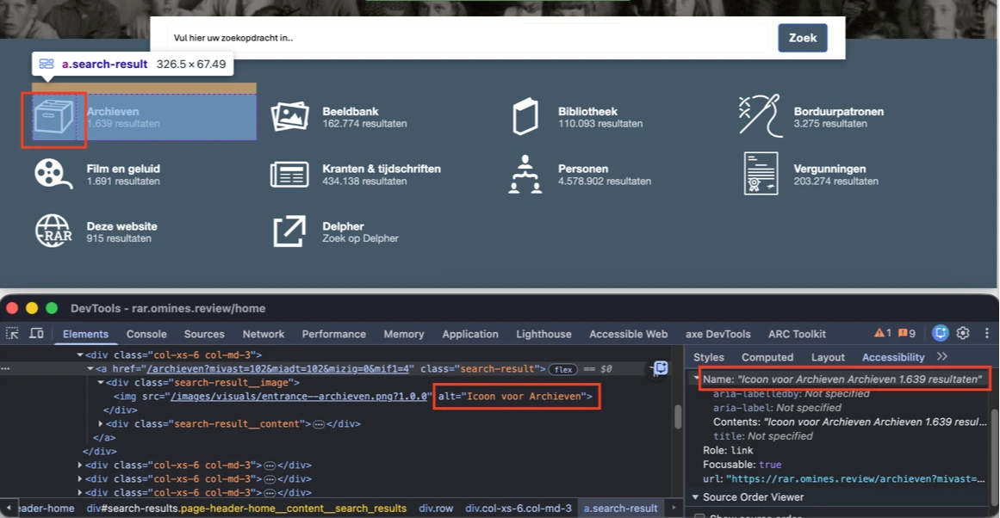
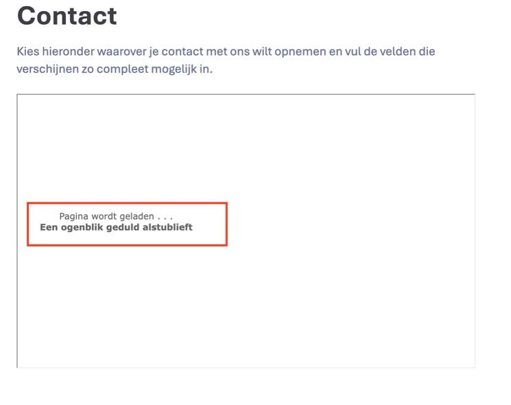
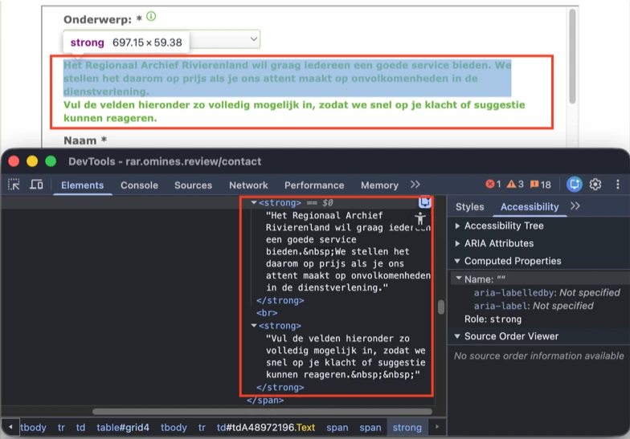
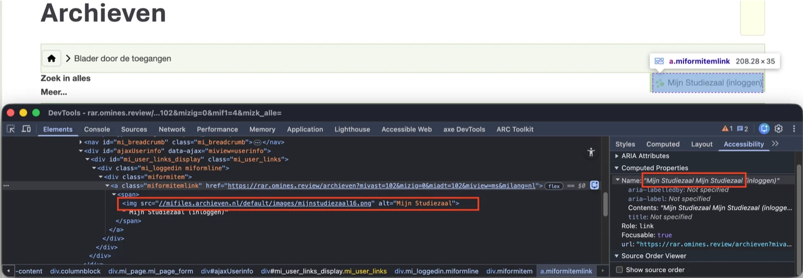
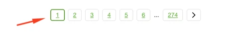
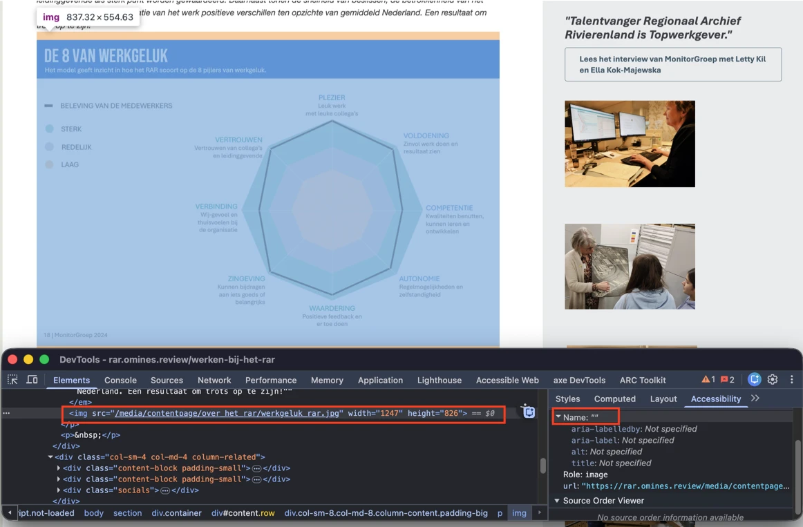
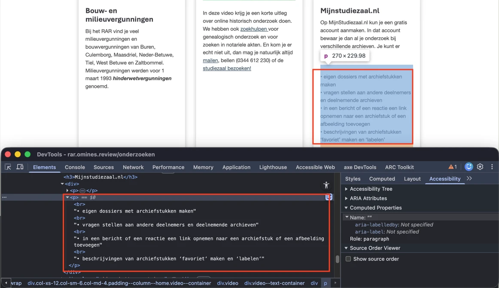
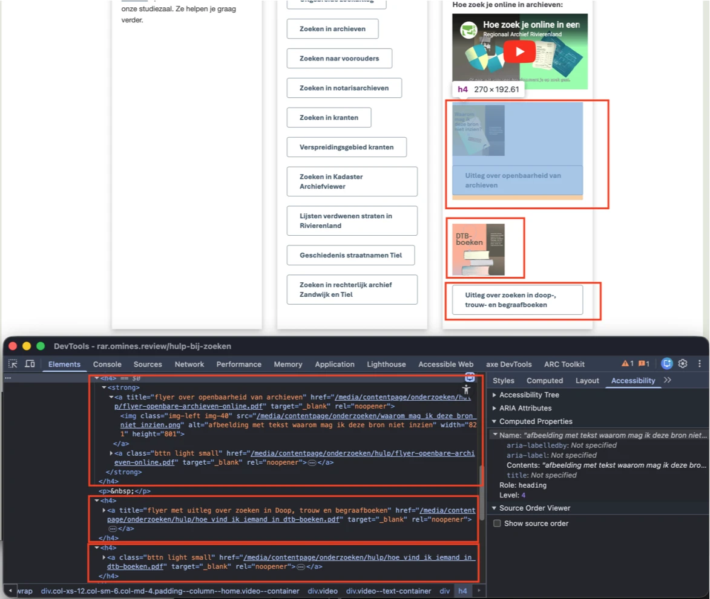

Audit digitale toegankelijkheid van website Regionaal Archief Rivierenland
Samenvatting
Wij hebben de website https://rar.omines.review onderzocht in 4 mei 2026. Op dit moment is een deel van de succescriteria als voldoende beoordeeld. In dit rapport lees je welke punten nog verbetering behoeven en hoe deze kunnen worden aangepakt.
Wanneer een bezoeker de website voor het eerst bezoekt, verschijnt een cookiebanner. De toetsenbordfocus kan naar interactieve elementen gaan die visueel achter de banner verborgen zijn. Daardoor is de focusindicator niet zichtbaar en is onduidelijk waar de focus staat.
Daarnaast: als een bezoeker vervolgens inzoomt tot 400% op een scherm met een resolutie van 1280 bij 1024 pixels, bedekt deze banner de hele pagina, waardoor het onmogelijk is om te zien waar de focus staat.
User story
Als bezoeker die met het toetsenbord navigeert, een schermvergroter gebruikt, of een visuele beperking heeft, heb ik nodig dat de cookiebanner óf interactie met de onderliggende pagina voorkomt, óf garandeert dat een element dat focus krijgt zichtbaar blijft. Op dit moment kan de toetsenbordfocus naar elementen achter de banner gaan, is de focusindicator niet zichtbaar, en kan ik niet bepalen waar ik ben of wat ik op het punt sta te activeren.
Oplossing
Zorg dat de cookiebanner, wanneer hij verschijnt, óf interactie met de onderliggende pagina voorkomt, óf geen elementen die focus kunnen krijgen verbergt.
#2 - Logo is een link, maar bestemming is onbekend
Het logo bovenaan de website werkt als link, maar heeft geen tekstalternatief omdat het alt-attribuut ontbreekt. Daardoor heeft de link geen goede toegankelijke naam, waardoor het lastig is voor gebruikers van assistieve technologieën zoals screenreaders om het doel of de bestemming van de link te begrijpen.
Daarnaast bevat het logo visueel de tekst "Regionaal Archief Rivierenland", maar deze tekst staat niet in de toegankelijke naam. Deze mismatch kan ook problemen geven voor gebruikers van voicecontrol, die op de zichtbare tekst leunen om elementen te activeren. Als de toegankelijke naam niet overeenkomt met de zichtbare tekst, werken voicecommando's mogelijk niet zoals verwacht.
User story
Als bezoeker die assistieve technologieën gebruikt — zoals een screenreader, voicecontrol, of die de pagina bekijkt zonder afbeeldingen — heb ik nodig dat het logo bovenaan de pagina (ook als het functioneert als link naar de homepage) een duidelijke en beschrijvende toegankelijke naam heeft die de zichtbare tekst van het logo bevat en zijn doel communiceert. Zo begrijp ik bij welke organisatie de pagina hoort, herken ik de link als een manier om naar de homepage terug te keren, en kan ik hem betrouwbaar activeren met mijn assistieve technologie.
Oplossing
Overweeg deze opties om context te bieden:
alt-tekst: als het logo een afbeelding is, voeg beschrijvende alt-tekst toe die de bestemming van de link aangeeft.
aria-label: voeg een aria-label-attribuut toe aan de link (<a>-element) met een beknopte beschrijving van de bestemming.
Visueel verborgen tekst: neem beschrijvende tekst op binnen het <a>-element en verberg die visueel met CSS, terwijl de tekst toegankelijk blijft voor screenreaders.
Zorg dat de toegankelijke naam van de logolink de zichtbare tekst bevat, bij voorkeur aan het begin. Idealiter is de toegankelijke naam identiek aan de zichtbare tekst.
#3 - Contrastverhouding van tekst en achtergrond is minder dan 4,5:1
Op de pagina's van de website wordt de groene kleur (#6FB644) gebruikt in combinatie met wit. De contrastverhouding is te laag: 2,5:1.
Bijvoorbeeld in de header in de hoofdnavigatie heeft de actieve link groene tekst zoals "Home" op een witte achtergrond. Op de homepage https://rar.omines.review/home heeft de linktekst witte tekst "10 oktober open dag - zet het in je agenda" op een groene achtergrond. Ook wanneer de bezoeker met de muis over deze link beweegt, heeft de link groene tekst op een witte achtergrond. Op de pagina https://rar.omines.review/contact zie de knop met witte tekst "Verzenden" en een groene achtergrond. Zie ook andere pagina's.
User story
Als bezoeker met een visuele beperking, leeftijdsgebonden contrastverlies, of iemand die in fel zonlicht leest, heb ik nodig dat elke tekst kleiner dan 24 px en niet vetgedrukt minimaal 4,5:1 contrast houdt met de achtergrond. Deze tekst valt onder de standaard contrastdrempel en de gebruikte kleuren zakken eronder, met als resultaat tekst die ik moet turen om te lezen of helemaal moet overslaan.
Oplossing
Deze tekst is kleiner dan 24 px en niet vetgedrukt, dus het contrast moet minimaal 4,5:1 zijn.
Op kleine schermen landt de toetsenbordfocus in de header op een onzichtbaar interactief element na de link met logo "Regionaal Archief Rivierenland". Onzichtbare interactieve elementen mogen niet in de focusvolgorde worden opgenomen. Dat kan leiden tot per ongeluk activeren en verwarring, vooral voor gebruikers die afhankelijk zijn van toetsenbordnavigatie.
User story
Als bezoeker die met het toetsenbord of een screenreader navigeert, heb ik nodig dat de toetsenbordfocus alleen op zichtbare interactieve elementen blijft — nooit op links, knoppen of velden die buiten het scherm staan of via CSS verborgen zijn. Op dit moment verdwijnt mijn focus naar iets wat ik niet kan zien, raak ik de focusindicator kwijt, weet ik niet waar ik op de pagina ben, en zou ik per ongeluk een knop kunnen activeren die ik nooit heb gezien.
Oplossing
Zorg dat onzichtbare elementen geen toetsenbordfocus kunnen krijgen. Gebruik display: none of visibility: hidden om elementen zowel uit de visuele weergave als uit de focusvolgorde te halen. Voor elementen die nu verborgen zijn maar later zichtbaar kunnen worden (zoals submenu's), gebruik tabindex="-1" om ze tijdelijk uit de tabvolgorde te halen, en herstel tabindex="0" of verwijder het attribuut wanneer het element weer zichtbaar wordt.
Op kleine schermen staat in het bovenste menu een knop met een icoon (drie horizontale strepen). Deze knop heeft geen toegankelijke rol.
Elk HTML-element heeft een inherente rol die zijn functie en gedrag beschrijft. Dat betekent dat het element bepaalde eigenschappen en functionaliteiten heeft om informatie aan de gebruiker te geven of te ontvangen. De rol bepaalt wat het element doet. Voorbeelden: button, a (link) en header, die automatisch rollen hebben die door browsers en assistieve technologieën zoals screenreaders worden herkend.
Screenreaders en andere assistieve hulpmiddelen moeten de juiste rol van elk element op een webpagina kennen. Dat stelt ze in staat intelligent met het element te interacteren en het doel ervan aan de gebruiker uit te leggen. Een rol die niet toegankelijk is, betekent dat hij niet correct is toegekend of dat de juiste code niet is gebruikt.
Daarnaast is deze knop niet toetsenbordtoegankelijk. Hij kan niet met de spatiebalk of de Enter-toets worden geactiveerd.
Hetzelfde zie je bij de "X"-knop in het geopende menu.
User story
Als bezoeker die met een screenreader, het toetsenbord, of assistieve technologie navigeert, heb ik nodig dat elke aanklikbare knop op de pagina de rol van knop blootstelt — via een echt <button>-element of role="button" plus de toetsenbordafhandeling. Op dit moment ziet het element eruit als een knop maar heeft geen knoprol, kondigt mijn screenreader hem niet als knop aan, kan mijn toetsenbord hem niet activeren zoals hij verwacht, en heb ik geen manier om te zien dat de pagina überhaupt een knop heeft.
Oplossing
Zorg dat de knop de juiste rol krijgt. Zorg ook dat de knop met het toetsenbord kan worden geactiveerd.
#6 - Knop bestaat alleen uit een afbeelding, maar er is geen alternatieve tekst
Op kleine schermen heeft een aanklikbaar icoon (drie horizontale strepen) in het bovenste menu geen tekstalternatief. Wanneer een knop alleen uit een afbeelding bestaat, moet de alternatieve tekst van de afbeelding de functie van de knop beschrijven.
Daardoor heeft deze knop geen toegankelijke naam. Dat voorkomt dat screenreader-gebruikers het doel van de knop begrijpen.
Hetzelfde zie je bij de "X"-knop in het geopende menu.
User story
Als bezoeker die knoppen activeert met een screenreader, of die de pagina leest met afbeeldingen uit, heb ik nodig dat elke knop met alleen een icoon een toegankelijke naam heeft die zijn functie beschrijft (via alt, aria-label of visueel verborgen tekst). Zonder die naam kondigt mijn screenreader alleen "knop" aan, blijft de placeholder bij uitgeschakelde afbeeldingen leeg, en kan ik niet zien wat er gebeurt als ik de bediening activeer.
Oplossing
Voeg de beschrijving toe via een van de volgende opties:
alt-tekst: als het icoon een <img>-element is, geef een functionele beschrijving in het alt-attribuut (bijvoorbeeld alt="Open zoeken").
aria-label: voeg een aria-label-attribuut toe aan het button-element met een beknopte beschrijving van zijn functie.
Visueel verborgen tekst: neem beschrijvende tekst op binnen het <button>-element en verberg die visueel met CSS, terwijl de tekst toegankelijk blijft voor screenreaders.
#7 - Toetsenbordfocus verlaat het mobiele menu
Impact: GrootType: TechniekWCAG: 2.4.3EN: 9.2.4.3
Wanneer de pagina is ingezoomd, verschijnt een menuknop met drie horizontale strepen in de header die het mobiele menu opent. Op dit moment kan de toetsenbordfocus uit het mobiele menu ontsnappen en naar de onderliggende pagina gaan, terwijl het menu open blijft.
Wanneer deze pagina met geopend mobiel menu wordt bekeken, overlapt het menu interactieve elementen op de onderliggende pagina. Deze onderliggende elementen kunnen nog steeds toetsenbordfocus krijgen, ook al zijn ze door het menu verborgen. Focusbare elementen moeten zichtbaar zijn. Focus toelaten op verborgen elementen veroorzaakt verwarring voor toetsenbord- en screenreader-gebruikers.
User story
Als bezoeker die het mobiele menu met het toetsenbord of een screenreader navigeert, heb ik nodig dat de focus binnen het mobiele menu blijft totdat ik het sluit — niet mag afdwalen naar de pagina daaronder terwijl het menu nog open is. Op dit moment kan mijn focus ontsnappen, landt mijn volgende tab op verborgen achtergrondinhoud, en heb ik geen idee welke laag van de pagina actief is.
Oplossing
Dit kan worden opgelost door:
Toetsenbordfocus vasthouden: houd de focus binnen het mobiele menu totdat het expliciet wordt gesloten (via een sluitknop of de Esc-toets).
Menu automatisch sluiten: sluit het menu zodra de focus eruit gaat.
Het is cruciaal dat onderliggende interactieve elementen geen focus krijgen terwijl het mobiele menu open is.
Op de pagina's heeft het zoekinvoerveld met placeholder-tekst "Vul hier uw zoekopdracht in.." geen toegankelijke naam. Dat voorkomt dat blinde of slechtziende gebruikers die afhankelijk zijn van screenreaders het doel van het veld begrijpen. Alle invoervelden moeten een toegankelijke naam hebben die hun functie duidelijk beschrijft.
Ook is de zichtbare tekst van het zoekveld (placeholder-tekst) niet aanwezig in zijn toegankelijke naam. Voor correcte voicecontrol-activering moet de zichtbare tekst onderdeel zijn van de toegankelijke naam. Als de placeholder afwijkt van de toegankelijke naam, of als de toegankelijke naam de zichtbare tekst niet bevat, falen voicecommando's gebaseerd op de zichtbare tekst.
User story
Als bezoeker die formulieren invult met een screenreader, voicecontrol of assistieve technologie, heb ik nodig dat elke formulierbediening een toegankelijke naam blootstelt die beschrijft wat ik moet invoeren — via een echt <label>-element, aria-label of aria-labelledby. Op dit moment heeft deze bediening geen naam, kondigt mijn screenreader alleen "edit text" of "combo box" aan, heeft mijn voicecommando niets om aan te spreken, en weet ik niet wat ik moet typen.
Oplossing
Geef een zichtbaar label met beschrijvende tekst, bijvoorbeeld "Zoeken", via een <label>-element en koppel het correct aan het invoerveld. Zorg dat het invoerveld een unieke id heeft zodat de relatie correct in de code is gedefinieerd. Als een zichtbaar label niet mogelijk is door designbeperkingen, geef een toegankelijke naam via een aria-label-attribuut.
Zorg ook dat de toegankelijke naam de zichtbare tekst bevat, bij voorkeur aan het begin van de naam. De toegankelijke naam mag ook exact gelijk zijn aan de zichtbare tekst.
#9 - Decoratieve afbeeldingen zijn niet verborgen voor screenreaders
Impact: MediumType: ContentWCAG: 1.1.1EN: 9.1.1.1

Op de pagina's is het zoekinvoerveld aanwezig. Wanneer de knop "Zoek" wordt geactiveerd, wordt het paneel met links weergegeven. Deze links gaan vergezeld van iconen die tekstalternatieven hebben zoals "Icoon voor Archieven" en daardoor aan screenreaders worden blootgesteld. Deze iconen hebben geen informatieve functie en zouden voor screenreaders verborgen moeten zijn.
Als bezoeker die de pagina hoort via een screenreader of leunt op een schone, voorspelbare leesvolgorde, heb ik nodig dat elke puur decoratieve <img> voor assistieve technologie wordt verborgen door een leeg alt="" te geven (en eventuele title-attributen te verwijderen). Zolang de decoratie tekst meedraagt, kondigt mijn screenreader hem aan alsof hij ertoe doet, wordt mijn leesritme onderbroken door inhoud die ik niet nodig heb, en kan ik niet in één oogopslag zien welke aankondigingen informatie dragen en welke niet.
Oplossing
Gebruik voor <img>-elementen een leeg alt-attribuut: alt="".
#10 - Relatie tussen links in een groep ontbreekt in HTML
Op de pagina's is het zoekinvoerveld aanwezig. Wanneer de knop "Zoek" wordt geactiveerd, wordt het paneel weergegeven. In dit paneel staat een groep links die visueel als groep gepresenteerd is, maar deze relatie staat niet in de HTML-structuur. Wanneer links visueel gegroepeerd zijn, moet deze relatie ook in de HTML aanwezig zijn zodat bezoekers die assistieve technologieën gebruiken, zoals screenreaders, de relatie tussen deze elementen begrijpen.
User story
Als bezoeker die met een screenreader navigeert, heb ik nodig dat elke visuele groep verwante links in de navigatie als echte groep in de HTML is opgemaakt — bijvoorbeeld in een <nav>-element of een <ul>/<ol>-lijst. Mijn screenreader gebruikt die structuur om "navigatie, lijst van N items" aan te kondigen, om de groep over te slaan, of er als geheel doorheen te stappen. Zonder die structuur worden de links voorgelezen als een stroom losse items zonder gevoel voor waar de ene sectie eindigt en de volgende begint.
Oplossing
Wikkel de links in een <ul>- of <nav>-element om de groep correct in de HTML weer te geven. Dit brengt de semantische relatie tussen de links over op assistieve technologieën.
Op deze pagina zijn de volgende teksten niet als kop opgemaakt: "Onderzoeken", "Beleven" en "Meedoen". Wanneer een tekst functioneert als kop maar geen juiste opmaak heeft, verliest hij zijn semantische betekenis en wordt onbereikbaar voor bezoekers die afhankelijk zijn van assistieve technologieën zoals screenreaders. Koppen zijn essentieel om door inhoud te navigeren en de structuur te begrijpen.
Als bezoeker die de pagina scant door van kop naar kop te springen met een screenreader, heb ik nodig dat elke tekst die eruitziet als kop ook een echte kop in de code is — verpakt in <h1> tot en met <h6>. De kop-snelkoppeling van mijn screenreader vindt alleen echte koppen, en een tekst die is gestyled om op een kop te lijken maar <div>, <span>, <strong> of <p> als opmaak heeft, is voor mij onzichtbaar wanneer ik de pagina probeer te scannen of direct naar de gewenste sectie wil springen.
Oplossing
Zorg dat deze teksten worden opgemaakt met de juiste kop-elementen (<h2> tot en met <h6>) zodat hun rol en hiërarchie in de inhoud worden weergegeven.
#12 - Lijststructuur is gebroken door onjuiste elementhiërarchie
Op deze pagina worden in de sectie "Agenda" <li>-elementen gebruikt zonder dat ze directe kinderen van een <ul>- of <ol>-element zijn. In plaats daarvan zijn deze <li>-elementen genest binnen <a>-elementen.
Lijstitems mogen alleen voorkomen in ofwel ongeordende (bullet-) lijsten ofwel geordende (sequentieel genummerde) lijsten. Omdat deze structuur niet wordt gevolgd, kunnen assistieve technologieën deze elementen mogelijk niet correct interpreteren als onderdeel van een lijst.
Dat kan ertoe leiden dat de lijststructuur niet correct wordt overgebracht, waardoor het voor gebruikers van assistieve technologieën moeilijker wordt om de relatie tussen de items te begrijpen.
Oplossing
Zorg dat <li>-elementen directe kinderen zijn van een <ul> of <ol>.
Een mogelijke oplossing is om role="navigation" te verwijderen van het <ul>-element dat de groep links omsluit en <a>-elementen op de volgende manier in <li> te plaatsen:
Op deze pagina functioneert het element met label "Hier vind je de veelgestelde vragen" als toggle-knop die een paneel met veelgestelde vragen uit- en inklapt. Deze knop stelt echter niet de juiste toegankelijke rol bloot. De functionaliteit is geïmplementeerd met een zichtbaar <label>-element gekoppeld aan een <input type="checkbox">. De checkbox is verborgen met display: none, dus hij wordt niet aan assistieve technologieën zoals screenreaders blootgesteld. Daardoor stellen assistieve technologieën alleen het <label> bloot, dat geen interactieve rol heeft. Screenreader-gebruikers herkennen daardoor mogelijk niet dat het element interactief is of dat het kan worden gebruikt om de FAQ-sectie uit en in te klappen.
Daarnaast: omdat deze knop het paneel opent en sluit, moet zijn uitgeklapte of ingeklapte staat programmatisch worden overgebracht. Op dit moment wordt deze staat niet blootgesteld. Assistieve technologieën hebben deze informatie nodig om de staat van het venster aan gebruikers door te geven, vooral aan blinde of slechtziende gebruikers. Het aria-expanded-attribuut kan worden gebruikt om de staat aan te geven.
Daarnaast is deze knop niet toetsenbordtoegankelijk. Hij kan niet met de spatiebalk of de Enter-toets worden geactiveerd.
Oplossing
Zorg dat de knop de juiste rol heeft door:
Het <button>-element te gebruiken: vervang de constructie van <label> / verborgen <input type="checkbox"> door een native <button>. Een native button geeft standaard de juiste rol, focusgedrag en toetsenbordondersteuning. Omdat de knop uitklapbare inhoud bestuurt, voeg aria-expanded toe om de huidige staat van het paneel te communiceren.
role="button" toe te voegen: als een ander element gebruikt moet worden (wat over het algemeen niet wordt aanbevolen), voeg role="button" toe om de rol expliciet te definiëren, samen met het tabindex-attribuut, toetsenbordafhandeling voor Enter en Space, en aria-expanded, zodat het element wordt aangekondigd en zich gedraagt als een echte knop.
Op deze pagina functioneert het element met label "Hier vind je de veelgestelde vragen" als toggle-knop die een paneel met veelgestelde vragen uit- en inklapt. De toetsenbordfocus kan dit paneel echter verlaten, waardoor gebruikers met de inhoud achter de overlay kunnen interacteren. Dat geeft een verwarrende ervaring voor toetsenbordgebruikers, die hun plek kunnen kwijtraken of het paneel niet meer kunnen sluiten — vooral wanneer de pagina op kleine schermen wordt bekeken.
Wanneer deze pagina op een klein scherm met geopend paneel wordt bekeken, overlapt het paneel interactieve elementen op de onderliggende pagina. Deze onderliggende elementen kunnen nog steeds toetsenbordfocus krijgen, ook al zijn ze door het paneel verborgen. Focusbare elementen moeten zichtbaar zijn. Focus toelaten op verborgen elementen veroorzaakt verwarring voor toetsenbord- en screenreader-gebruikers.
User story
Als bezoeker die met het toetsenbord of een screenreader navigeert, heb ik nodig dat de toetsenbordfocus binnen elke overlay blijft totdat ik die sluit — niet mag afdwalen naar de pagina daaronder. Op dit moment kan mijn focus uit het paneel ontsnappen terwijl het nog open is, ga ik per ongeluk interacteren met de verborgen pagina achter de overlay, en kan ik niet meer zien wat er nu actief is.
Oplossing
Dit kan worden opgelost door:
Toetsenbordfocus vasthouden: houd de focus binnen het paneel totdat het expliciet wordt gesloten (via een sluitknop of de Esc-toets).
Paneel automatisch sluiten: sluit het paneel zodra de focus eruit gaat.
Het is cruciaal dat onderliggende interactieve elementen geen focus krijgen terwijl het paneel open is.
Op deze pagina is onder de kop "Wat vind ik bij het RAR over..." een <svg>-element met een kaart aanwezig. De delen van deze kaart zijn links die geen toegankelijke naam hebben. Dat voorkomt dat screenreader-gebruikers de bestemming van de links begrijpen. Alle links moeten toegankelijke namen hebben die hun bestemming duidelijk beschrijven.
User story
Als bezoeker die links volgt met een screenreader, voicecontrol of assistieve technologie, heb ik nodig dat elke link een toegankelijke naam blootstelt die beschrijft waar hij heen gaat — via zichtbare tekst, een aria-label of visueel verborgen tekst. Op dit moment heeft deze link helemaal geen naam, kondigt mijn screenreader alleen "link" aan, en kan ik niet zien waar de link mij heen brengt.
Oplossing
Geef deze links toegankelijke namen, ofwel door beschrijvende linktekst te gebruiken, een aria-label of andere passende technieken.
#16 - Functionaliteit is niet toetsenbordtoegankelijk
Impact: GrootType: TechniekWCAG: 2.1.1EN: 9.2.1.1

Op deze pagina is onder de kop "Wat vind ik bij het RAR over..." een <svg>-element met een kaart aanwezig. De delen van deze kaart zijn links. Wanneer bezoekers met de muis over deze links bewegen, worden teksten zoals "Waterschap Rivierenland" weergegeven. Deze functionaliteit is echter niet via toetsenbord toegankelijk.
User story
Als toetsenbordgebruiker, inclusief gebruikers die geen muis kunnen gebruiken, heb ik toegang tot en interactie met de links binnen de kaart nodig en moet ik de bijbehorende tekst (bijvoorbeeld "Waterschap Rivierenland") via het toetsenbord kunnen onthullen, zodat ik dezelfde informatie en functionaliteit krijg als muisgebruikers.
Oplossing
Zorg dat de tekst die bij hover wordt getoond ook wordt getoond wanneer de bijbehorende link toetsenbordfocus krijgt. Bezoekers moeten met het toetsenbord naar elke interactieve kaartregio kunnen navigeren en dezelfde informatie en functionaliteit kunnen bereiken die voor muisgebruikers beschikbaar is.
#17 - Onvoldoende contrast van informatieve elementen
Op deze pagina is onder de kop "Wat vind ik bij het RAR over..." een <svg>-element met een kaart aanwezig. Op deze kaart hebben de lijnen die regio's scheiden een groene kleur (#6FB644) op een lichtgroene achtergrond (#9ED870). De contrastverhouding is 1,5:1.
Ook de blauwe (#8ABFE7) elementen op de kaart hebben onvoldoende contrastverhouding tegen de aangrenzende kleuren. Tegen de groene lijnen (#6FB644) is de contrastverhouding 1,3:1. Tegen de witte sectieachtergrond is de contrastverhouding 2,0:1.
User story
Als bezoeker met een visuele beperking, leeftijdsgebonden contrastverlies of in fel zonlicht, heb ik nodig dat elk informatief grafisch element op de pagina — balken, lijnen, betekenisvolle elementen — minimaal 3,0:1 contrast houdt tegen de elementen eromheen. Het contrast is wat me categorieën van elkaar laat onderscheiden, en informatie die in de achtergrond is opgegaan is informatie die ik niet kan gebruiken.
Oplossing
Het contrast van informatieve elementen ten opzichte van aangrenzende gebieden moet minimaal 3,0:1 zijn zodat gebruikers ze kunnen onderscheiden.
#18 - Leesvolgorde is niet betekenisvol
Impact: MediumType: ContentWCAG: 1.3.2EN: 9.1.3.2
Op deze pagina is de HTML-volgorde van elementen binnen de artikelen in de sectie "Actueel": afbeelding met tekstalternatief, kop, tekst, link. De leesvolgorde van deze inhoud is niet betekenisvol.
Hetzelfde probleem zie je op de pagina https://rar.omines.review/onderzoeken in de sectie "Uitgelicht". Zie het artikel "Bouw- en milieuvergunningen".
Een soortgelijk probleem zie je in de sectie "Bekijk ook". De iframes met YouTube-videospeler staan in de code boven de kop waar ze bij horen. Zie iframes die horen bij de volgende koppen: "Wij bewaren ook jouw geschiedenis!" en "Verhalen van het RAR".
Als bezoeker die nieuws-, blog- of evenementenlijsten met een screenreader navigeert of die op een voorspelbaar leesritme leunt, heb ik nodig dat de kop van elk artikel als eerste in de DOM komt, met de afbeelding en andere elementen daarna genest in hetzelfde artikel. Op dit moment wordt de afbeelding voorgelezen vóór de kop, kondigt mijn screenreader losse alt-tekst aan zonder dat ik weet bij welk artikel die hoort, en wordt de lijst met artikelen een rommeltje dat ik niet kan koppelen.
Oplossing
Wanneer een pagina meerdere artikelen bevat, elk met een afbeelding, tekst en kop, moet de kop als eerste in de HTML staan. Zo wordt de inhoud die volgt op de kop correct ermee geassocieerd, ongeacht de visuele lay-out. De aanbevolen volgorde is: kop, afbeelding, tekst. Wanneer assistieve technologieën zoals screenreaders de inhoud lezen, is de relatie tussen de kop en de bijbehorende inhoud duidelijk. Een andere oplossing is om de afbeeldingen voor de screenreader te verbergen, omdat ze decoratief zijn en geen betekenisvolle informatie toevoegen. Verberg ze voor assistieve technologieën met een leeg alt-attribuut.
Hetzelfde geldt voor de secties met iframes. In elke sectie met een iframe, tekst en kop moet de kop als eerste in de HTML staan.
#19 - Linktekst is niet duidelijk genoeg
Impact: MediumType: ContentWCAG: 2.4.4EN: 9.2.4.4
Op deze pagina bevatten meerdere links in de sectie "Actueel" de niet-informatieve tekst "Lees verder". Deze tekst beschrijft de bestemming van de links niet voldoende, wat dubbelzinnigheid oplevert, vooral voor gebruikers met een cognitieve beperking of die op screenreaders leunen. Vage linkteksten zoals "lees verder" of "klik hier" moeten worden vermeden.
User story
Als bezoeker die links volgt met een screenreader, voicecontrol, met cognitieve beperkingen, of die een pagina scant door van link naar link te springen, heb ik nodig dat elke linktekst zelfstandig zijn bestemming beschrijft — geen generieke zinnen zoals "klik hier", "meer" of "lees verder" die buiten context niets betekenen. De linklijst van mijn screenreader toont alleen de linktekst, mijn voicecommando heeft een unieke naam nodig om aan te spreken, en een lijst vol "Lees verder"-links zegt me niets over welke ik moet volgen.
Oplossing
Zorg dat de linktekst de bestemming of het doel van de link duidelijk aangeeft. Vermijd vage linkteksten zoals "Lees verder" wanneer ze buiten context geen zin hebben. Waar de zichtbare linktekst beknopt moet blijven, kan extra context worden toegevoegd via visueel verborgen tekst die in de toegankelijke naam is opgenomen, bijvoorbeeld "Lees verder over [titel artikel]". Bijvoorbeeld:
<a href="/nl/page/2336" class="bttn dark small">
Lees verder
<span class="sr-only"> over wat we in 2025 allemaal hebben gedaan</span>
</a>
#20 - Iframe-titel is niet beschrijvend
Impact: MediumType: ContentWCAG: 2.4.6EN: 9.2.4.6
Op deze pagina staan in de sectie "Bekijk ook" onder de koppen "Hoe doe je onderzoek in archieven?" en "Hoe zoek je online in archieven?" <iframe>-elementen met dezelfde tekst in het title-attribuut: "YouTube video player". Deze titel beschrijft de ingebedde inhoud onvoldoende. Zo'n generieke titel geeft screenreader-gebruikers geen zinvolle informatie om te bepalen of het iframe relevante inhoud bevat. De titel moet duidelijk beschrijven welke inhoud is ingebed.
Als bezoeker die met een screenreader door iframes navigeert, heb ik nodig dat elk iframe een title-attribuut heeft dat zijn werkelijke inhoud beschrijft — geen generieke placeholders zoals "iframe" of "embedded content". De titel is het enige wat mijn screenreader aankondigt voordat ik erin ga, en een niet-beschrijvende titel laat me geen idee hebben wat erin zit of of het de moeite waard is om te bezoeken.
Oplossing
Werk de title-attributen bij zodat ze de ingebedde inhoud duidelijk beschrijven. Bijvoorbeeld: <iframe title="YouTube video player: Hoe doe je onderzoek in archieven?" src="...">.
#21 - Iframe mist een title-attribuut
Impact: GrootType: TechniekWCAG: 4.1.2EN: 9.4.1.2
Op deze pagina staan in de sectie "Bekijk ook" onder de koppen "Wij bewaren ook jouw geschiedenis!" en "Verhalen van het RAR" <iframe>-elementen waar het title-attribuut ontbreekt. Screenreaders kunnen het doel van de iframes niet aankondigen, waardoor gebruikers niet kunnen bepalen welke inhoud is ingebed en of het de moeite waard is om er naartoe te navigeren. Dat hindert navigatie voor gebruikers van assistieve technologie aanzienlijk.
Als bezoeker die met een screenreader door iframes navigeert, heb ik nodig dat elk iframe op de pagina een title-attribuut heeft. Mijn screenreader leest de titel om me te vertellen wat erin is ingebed (een video, een kaart, een formulier), en een iframe zonder titel is een zwarte doos waar ik niet over kan beslissen of ik erin wil.
Oplossing
Voeg beschrijvende title-attributen toe aan de <iframe>-elementen die duidelijk aangeven welke inhoud is ingebed. Bijvoorbeeld: <iframe title="YouTube video player: Wij bewaren ook jouw geschiedenis!" src="...">.
Op deze pagina staan in de sectie "Bekijk ook" YouTube-videospelers. Het logo bovenaan de speler toont de volledige tekst "RAR", maar het tekstalternatief (de alt-tekst) is "thumbnail-image". De alt-tekst moet alle zichtbare tekst in het logo bevatten, zodat bezoekers die de afbeelding niet kunnen zien dezelfde informatie krijgen.
Dit logo functioneert als knop. De toegankelijke naam van deze knop komt uit het alt-attribuut van het <img>-element. Zo'n toegankelijke naam beschrijft de functie van de knop niet correct. Dat maakt het lastig voor blinde gebruikers en mensen die op screenreaders leunen om het doel van de knop te begrijpen. De toegankelijke naam moet de actie van de knop duidelijk en beknopt overbrengen.
Daarnaast kan zo'n discrepantie tussen de zichtbare tekst en de toegankelijke naam voicecontrol verhinderen. Voicecommando's leunen op de zichtbare tekst van elementen. Als de toegankelijke naam afwijkt, activeren voicecommando's de knop niet.
User story
Als bezoeker die een screenreader, voicecontrol of andere assistieve technologie gebruikt, heb ik nodig dat elke knop een toegankelijke naam heeft die zijn actie duidelijk beschrijft, zodat ik begrijp wat er gebeurt als ik hem activeer. Als de naam onduidelijk of niet gerelateerd is, kan ik op het verkeerde been worden gezet of de bediening niet gebruiken.
Oplossing
Geef de knop een duidelijke en beschrijvende toegankelijke naam die zowel de zichtbare tekst op het logo als de functie van de knop communiceert. Zorg dat de toegankelijke naam de tekst "RAR" bevat en de actie beschrijft, zoals het openen van de YouTube-pagina van de organisatie. Vermijd generieke of niet-gerelateerde labels. De toegankelijke naam moet zowel weerspiegelen wat zichtbaar is als wat de knop doet, zodat alle gebruikers gelijkwaardige informatie krijgen en het doel van de knop begrijpen.
#23 - Automatisch gegenereerde ondertitels
Impact: MediumType: ContentWCAG: 1.2.2EN: 9.1.2.2
Op deze pagina staan in de sectie "Bekijk ook" video's met voice-over. De video's onder "Wij bewaren ook jouw geschiedenis!" en "Verhalen van het RAR" hebben weliswaar ondertitels, maar deze zijn automatisch gegenereerd en daardoor onnauwkeurig. Video's met gesproken inhoud hebben nauwkeurige ondertitels nodig om toegankelijk te zijn voor gebruikers met een auditieve beperking. Deze ondertitels moeten exact overeenkomen met de gesproken woorden in de video. Omdat de automatisch gegenereerde ondertitels fouten en misinterpretaties van het gesproken woord bevatten, voldoen ze niet aan deze toegankelijkheidseis.
User story
Als bezoeker die doof of slechthorend is, die ondertitels nodig heeft om spraak te volgen in een lawaaiige of stille omgeving, die geen native speaker is van de gesproken taal, of die op nauwkeurige tekst leunt om de video te begrijpen, heb ik nodig dat elke video met gesproken inhoud kwalitatieve handmatige ondertiteling heeft die woord voor woord overeenkomt met de audio. Automatisch gegenereerde ondertitels missen interpunctie, spellen namen verkeerd, laten technische termen vallen, en maken kernzinnen onzin — een ondertiteling die ik niet kan vertrouwen is slechter dan geen ondertiteling.
Oplossing
Zorg dat de ondertitels van hoge kwaliteit zijn en exact weergeven wat in de video wordt gezegd.
#24 - Visuele informatie in de video is niet toegankelijk
Impact: MediumType: ContentWCAG: 1.2.3EN: 9.1.2.3
Op deze pagina bevat de video onder "Verhalen van het RAR" tekst en logo's op verschillende momenten (bijvoorbeeld rond 0:01). Er is echter geen media-alternatief en ook geen audiodescriptie. Deze video bevat visuele informatie (tekst en logo's) die niet toegankelijk is voor blinde gebruikers.
User story
Als bezoeker die blind is, een visuele beperking heeft, de pagina met een screenreader leest, of die visuele informatie in tekst of audio nodig heeft, heb ik nodig dat elke video die tekst, namen, logo's of andere alleen-visuele informatie toont vergezeld gaat van een media-alternatief — een geschreven transcript of beschrijvend document op de pagina — dat alles vastlegt wat de camera toont maar de soundtrack niet zegt. Op dit moment staan de namen, ondertitels en logo's die in beeld flitsen nergens in de audiotrack en nergens in de paginatekst, dus bereiken ze ziende kijkers wel, maar mij niet.
Oplossing
Hoewel een media-alternatief (tekstuele weergave van alle informatie) eerder een acceptabele oplossing was, vereist Succescriterium 1.2.5 nu audiodescriptie van de visuele inhoud voor zulke video's. Voeg daarom een audiodescriptie toe om deze video toegankelijk te maken.
Wanneer deze pagina wordt bekeken op een schermresolutie van 1280 bij 1024 pixels en wordt ingezoomd tot 400% (320 px breedte), gaat de tekst "Hier vind je de veelgestelde vragen" op de vaste toggle-knop deels verloren.
400% zoom mag de leesbaarheid van een informatief element niet aantasten.
User story
Als bezoeker met een visuele beperking die de pagina inzoomt tot 400% op een 1280×1024-scherm (effectief een viewport van 320 px), heb ik nodig dat elke tekst op de pagina zichtbaar blijft — niet wordt afgesneden, verborgen, of uit de viewport wordt geduwd. Op dit moment knipt zoomen delen van de tekst af; juist het hulpmiddel waar ik op leun om de pagina te lezen, neemt de woorden weg, en ik kan de inhoud niet terughalen.
Oplossing
Zorg dat alles nog werkt en leesbaar is bij 400% zoom op een 1280 bij 1024 pixel scherm.
Op deze pagina richt de skiplink "Ga direct naar de content" zich op de sectie met links zoals "Onderzoeken Wat kun je bij het RAR vinden? Hoe zoek je op deze site? En wat moet je weten voor je bij ons langs komt?", maar er staat aanvullende unieke inhoud boven dit doel. Skiplinks moeten bezoekers naar het allereerste begin van de hoofdinhoud leiden, zodat ze alle herhaalde of niet-essentiële inhoud kunnen overslaan.
User story
Als bezoeker die met het toetsenbord of een screenreader navigeert, heb ik nodig dat de skiplink op elke pagina wijst naar het begin van de unieke hoofdinhoud — niet naar een doel halverwege de pagina dat nog gedeelde inhoud erboven heeft staan. Als de skiplink me halverwege de pagina droppt, mis ik de unieke inhoud tussen de top van de pagina en het doel van de link, en moet ik terugtabben om die te vinden.
Oplossing
Zorg dat de skiplink "Ga direct naar de content" naar het juiste startpunt van de unieke inhoud op de pagina wijst.
#27 - Meerdere pagina's hebben dezelfde titeltekst
Impact: MediumType: ContentWCAG: 2.4.2EN: 9.2.4.2
Deze pagina en enkele andere pagina's, zoals https://rar.omines.review/contact, https://rar.omines.review/e-depot-en-open-data, https://rar.omines.review/organisatie en andere, hebben dezelfde tekst in het <title>-element van de pagina: "Het RAR verzamelt en beheert archieven, afbeeldingen, kranten, boeken en documentatie over de gemeenten Buren, Culemborg, West Betuwe, Maasdriel, Neder-Betuwe, Tiel en Zaltbommel en over polders en waterschappen in Rivierenland.".
Elke pagina hoort een unieke en beschrijvende titel te hebben. Dubbele titels kunnen gebruikers in de war brengen en navigatie tussen pagina's bemoeilijken, vooral voor mensen die op de titelbalk of browsertabbladen leunen om pagina's te identificeren.
User story
Als bezoeker die met een screenreader navigeert, die meerdere browsertabbladen open houdt, die door browsergeschiedenis scant, of die pagina's bookmarkt, heb ik nodig dat elke pagina op de site een unieke titel heeft die zijn eigen inhoud beschrijft. Op dit moment delen twee verschillende pagina's dezelfde titel, kondigt mijn screenreader voor beide dezelfde woorden aan, zijn mijn browsertabbladen niet te onderscheiden, en staan in geschiedenis en bookmarks twee items met hetzelfde label maar verschillende pagina's.
Oplossing
Werk het <title>-element bij om elke pagina een unieke en informatieve titel te geven die zijn inhoud nauwkeurig weergeeft.
Deze pagina bevat issues die hierboven al beschreven zijn.
Het formulier is getest met "Onderwerp: klacht of suggestie" > "Ik heb een: klacht" > "Mijn klacht gaat over: Mijn bezoek aan het Regionaal Archief Rivierenland aan het J.S. de Jongplein 3 in Tiel".
#28 - Kop is niet als kop opgemaakt
Impact: MediumType: ContentWCAG: 1.3.1EN: 9.1.3.1
Op deze pagina is de tekst "Deel deze pagina" niet als kop opgemaakt. Wanneer een tekst als kop functioneert maar geen juiste opmaak heeft, verliest hij zijn semantische betekenis en wordt onbereikbaar voor bezoekers die afhankelijk zijn van assistieve technologieën zoals screenreaders. Koppen zijn essentieel om door inhoud te navigeren en de structuur te begrijpen.
Zorg dat deze tekst wordt opgemaakt met het juiste kop-element (<h2> tot en met <h6>) zodat zijn rol en hiërarchie in de inhoud worden weergegeven.
#29 - Strong-element gebruikt voor kop in plaats van h1-h6
Impact: MediumType: ContentWCAG: 1.3.1EN: 9.1.3.1
Op deze pagina zouden de volgende teksten koppen moeten zijn, maar de kop-elementen ontbreken. Het <strong>-element wordt gebruikt om ze eruit te laten zien als koppen. Zie "WET OPEN OVERHEID" en "Voorwaarden voor je verzoek:".
Het <strong>-element is bedoeld voor semantische nadruk, niet om koppen te maken. Door het te gebruiken in plaats van kop-elementen (<h1> tot en met <h6>) wordt de inhoudsstructuur verkeerd weergegeven en is de inhoud niet goed bereikbaar voor assistieve technologieën.
User story
Als bezoeker die de pagina scant door met een screenreader door koppen te springen, heb ik nodig dat elke tekst die een sectie introduceert in een echt kop-element (h1-h6) staat — niet in <strong> of <em>, die alleen "benadrukt" betekenen. <strong> en <em> zijn onzichtbaar voor mijn kop-snelkoppeling, de sectie die ze introduceren verschijnt nooit in mijn mentale overzicht van de pagina, en ik moet de hele pagina van boven tot onder lezen om te vinden wat een ziende bezoeker in één oogopslag ziet.
Oplossing
Verwijder dit element en gebruik de juiste kop-elementen voor deze teksten.
#30 - Contrastverhouding van tekst en achtergrond is minder dan 4,5:1
Impact: MediumType: ContentWCAG: 1.4.3EN: 9.1.4.3
Onder "Voorwaarden voor je verzoek:" is de rode (#FF0000) tekst die begint met "LET OP: het gaat dus NIET om …" aanwezig op de grijze (#E8ECED) achtergrond. De contrastverhouding is te laag: 3,4:1. Niet alle bezoekers kunnen deze tekst zien.
Ook op deze pagina staat in het formulier de knop met tekst "Verzenden". Wanneer de bezoeker met de muis over deze knop beweegt, staat de witte tekst "Verzenden" op de lichtgrijze (#F2F2F2) achtergrond. De contrastverhouding is 1,1:1.
User story
Als bezoeker met een visuele beperking, leeftijdsgebonden contrastverlies of in fel zonlicht, heb ik nodig dat elke tekst kleiner dan 19 px minimaal 4,5:1 contrast houdt met de achtergrond. De tekst is klein genoeg om de hogere contrastdrempel nodig te hebben, de huidige kleuren zakken eronder, en juist de bodytekst die de meeste informatie van de pagina draagt is het deel dat ik niet kan lezen.
Oplossing
Deze tekst is kleiner dan 19 px, dus het contrast moet minimaal 4,5:1 zijn.
#31 - Em-element gebruikt voor decoratie
Impact: KleinType: ContentWCAG: 1.3.1EN: 9.1.3.1
Op deze pagina wordt het <em>-element ten onrechte gebruikt voor visuele opmaak. Het <em>-element heeft een semantische betekenis en hoort alleen woorden of zinsdelen te benadrukken — niet om hele paragrafen cursief weer te geven. Zie de teksten die beginnen met "De Wet open overheid (Woo) zegt dat informatie …", "LET OP: het gaat dus NIET om …" en andere.
User story
Als bezoeker die de pagina via een screenreader leest, heb ik nodig dat <em> alleen wordt gebruikt om woorden of korte zinsdelen te benadrukken — niet om hele alinea's visueel cursief te maken — want mijn screenreader markeert elk benadrukt stukje met een ander stemvolume of pauze, en als hele zinnen tussen <em>-tags staan, krijgt elke zin diezelfde nadruk en raak ik kwijt welke informatie er nu écht uitgelicht wordt.
Oplossing
Gebruik CSS in plaats van <em> voor cursieve weergave. Verwijder het onnodige <em>-element en pas de cursieve opmaak toe via CSS.
#32 - Statusbericht wordt niet aangekondigd door screenreaders
Impact: GrootType: TechniekWCAG: 4.1.3EN: 9.4.1.3
Wanneer deze pagina laadt, verschijnt in het formulier het bericht "Pagina wordt geladen … Een ogenblik geduld alstublieft" om voortgang aan te geven. Dit is een statusbericht maar wordt niet aangekondigd door screenreaders.
Hetzelfde probleem zie je bij een vergelijkbaar statusbericht dat wordt weergegeven terwijl het indienen van het formulier loopt.
Hetzelfde probleem zie je op de pagina https://rar.omines.review/meldingstool bij het statusbericht dat wordt weergegeven nadat het formulier succesvol is verzonden: "Bedankt voor het invullen van de meldingstool! …".
User story
Als bezoeker die een screenreader gebruikt, heb ik nodig dat voortgang- en statusberichten worden aangekondigd wanneer ze verschijnen, zodat ik weet dat het systeem mijn verzoek verwerkt en begrijp dat ik moet wachten. Als deze berichten alleen visueel worden getoond, kan ik denken dat er niets gebeurt of dat er iets mis is gegaan.
Oplossing
Maak het toegankelijk door een passend aria-live-attribuut toe te voegen (bijvoorbeeld aria-live="polite") aan het element dat het voortgangsbericht bevat. Zo zorg je dat screenreaders het bericht aankondigen. Andere oplossingen zijn ook mogelijk.
#33 - Knop heeft geen juiste rol en mist toegankelijke naam
Impact: GrootType: TechniekWCAG: 4.1.2EN: 9.4.1.2
Op deze pagina is in het formulier het element met een "i"-icoon naast "Onderwerp: *" een knop, maar het heeft niet de juiste toegankelijke rol. Dat voorkomt dat screenreaders het als knop identificeren, waardoor het ontoegankelijk is voor blinde gebruikers. Ze weten niet dat dit element interactief is en kan worden aangeklikt.
Deze knop mist ook een toegankelijke naam. Dat voorkomt dat screenreader-gebruikers het doel van de knop begrijpen.
User story
Als bezoeker die een screenreader, voicecontrol, toetsenbord of andere assistieve technologie gebruikt, heb ik nodig dat elk interactief element als knop wordt blootgesteld en een duidelijke toegankelijke naam heeft, zodat ik het als interactief kan identificeren, het doel begrijp, en het met vertrouwen kan activeren. Zonder rol of naam weet ik mogelijk niet dat het element kan worden gebruikt of wat het doet.
Oplossing
Zorg dat het element aan assistieve technologieën als knop wordt blootgesteld en een duidelijke, beschrijvende toegankelijke naam heeft die zijn doel communiceert. Gebruik native interactieve bedieningen waar mogelijk, omdat ze ingebouwde toegankelijkheidsondersteuning hebben. Vertrouw niet op de visuele weergave alleen om interactiviteit over te brengen. Verifieer dat assistieve technologieën zowel de rol als het doel van het element aankondigen.
#34 - Onvoldoende contrast van informatieve elementen
Op deze pagina staat in het formulier naast "Onderwerp: *" een knop met "i"-icoon. Dit icoon is groen (#6FB644) op de witte achtergrond. De contrastverhouding is te laag: 2,5:1.
Daarnaast staat in het formulier het selectievakje met label "Ja, ik ga ermee akkoord dat mijn persoonsgegevens worden gebruikt voor afhandeling van mijn vraag of opmerking. *". De contrastverhouding tussen de groene (#6FB644) rand en de witte achtergrond is 2,5:1. Wanneer het selectievakje aangevinkt is, heeft het groene (#6FB644) vinkje onvoldoende contrastverhouding tegen de grijze (#DFDFDF) achtergrond: 1,9:1. Dezelfde issues zie je bij de keuzerondjes in dit formulier.
De invoervelden in dit formulier hebben ook de groene randen die onvoldoende contrastverhouding tegen de witte achtergrond hebben: 2,5:1.
Wanneer de selectievakjes en geselecteerde keuzerondjes toetsenbordfocus krijgen, wordt de groene rand ook gebruikt om de gefocuste staat aan te geven. De contrastverhouding is te laag: 2,5:1.
Oplossing
Het contrast van informatieve elementen ten opzichte van aangrenzende gebieden moet minimaal 3,0:1 zijn zodat gebruikers ze kunnen onderscheiden.
#35 - Strong-element gebruikt voor decoratie
Impact: KleinType: ContentWCAG: 1.3.1EN: 9.1.3.1

Op deze pagina wordt in het formulier het <strong>-element ten onrechte gebruikt voor visuele opmaak. Hele zinnen zijn in een <strong>-element gewikkeld om ze vetgedrukt te maken. Zie bijvoorbeeld de tekst die begint met: "Het Regionaal Archief Rivierenland wil graag …".
Het <strong>-element heeft een semantische betekenis en hoort alleen woorden of korte zinsdelen te benadrukken — niet om hele paragrafen vet weer te geven.
User story
Als bezoeker die de pagina via een screenreader leest, heb ik nodig dat <strong> alleen wordt gebruikt voor woorden of zinsdelen die echt belangrijk zijn — niet om hele paragrafen vetgedrukt weer te geven — want mijn screenreader kondigt elk <strong>-fragment extra aan, en als alles vet is, raakt het signaal verloren en weet ik niet meer welk woord echt belangrijk is.
Oplossing
Gebruik CSS in plaats van <strong> voor vetgedrukte weergave. Verwijder de onnodige <strong>-elementen en pas de vette opmaak toe via CSS.
Op deze pagina mist een formulier met invoervelden voor persoonlijke informatie (bijvoorbeeld "Naam", "E-mailadres", "Telefoonnummer" en andere) het autocomplete-attribuut. Wanneer formulieren persoonlijke gegevens verzamelen, moet het juiste autocomplete-attribuut bij deze invoervelden worden gebruikt. Dat stelt browsers en assistieve technologieën in staat om gebruikers te helpen, bijvoorbeeld door de velden automatisch in te vullen.
Als bezoeker die formulieren invult met een wachtwoordmanager, met browser-autofill, met een symboolset, met switch control, of met elk hulpmiddel dat voor mij typt omdat typen langzaam of pijnlijk is, heb ik nodig dat elk invoerveld dat om persoonlijke informatie vraagt (naam, e-mail, telefoon, adres, postcode, …) het juiste autocomplete-attribuut draagt. Zonder dit kan mijn browser niet aanbieden om het veld in te vullen, heeft mijn wachtwoordmanager geen idee wat hij moet plakken, en moet ik elk teken handmatig typen, ook al staan de gegevens al op mijn apparaat.
Oplossing
Het autocomplete-attribuut ontbreekt momenteel in deze invoervelden. Meer informatie over het gebruik van dit attribuut en de vereiste waarden vind je op: https://www.w3.org/TR/WCAG21/#input-purposes.
Op deze pagina staat in het formulier een invoerveld "Datum". De grijze placeholder-tekst "dd-mm-jjjj" tegen de lichtgrijze achtergrond heeft een contrastverhouding van 2,5:1. Onvoldoende contrast tussen placeholder-tekst en achtergrond kan het lezen van de placeholder bemoeilijken en de bruikbaarheid beïnvloeden.
User story
Als bezoeker met een visuele beperking, leeftijdsgebonden contrastverlies of in fel zonlicht, heb ik nodig dat elke placeholder in een invoerveld minimaal 4,5:1 contrast houdt tegen de invoerachtergrond. De placeholder-tekst draagt het voorbeeld of de notatie die ik moet volgen, en een placeholder die ik niet kan lezen is informatie waarnaar ik moet gokken.
Oplossing
Dit voldoet niet aan de minimaal vereiste contrastverhouding van 4,5:1.
Je kunt dit oplossen door deze CSS-code toe te voegen:
Op deze pagina is in het formulier de knop met label "dd-mm-jjjj" verborgen via aria-hidden="true". Dat maakt deze knop onzichtbaar voor screenreaders. De verborgen klikbare elementen kunnen echter nog steeds toetsenbordfocus krijgen.
Dat veroorzaakt verschillende issues. Blinde gebruikers kunnen bijvoorbeeld nog steeds met het toetsenbord naar deze elementen navigeren, zonder te weten wat deze elementen zijn of wat hun functie is.
User story
Als bezoeker die met een screenreader en het toetsenbord navigeert, heb ik nodig dat elk focusbaar element op de pagina zichtbaar is voor assistieve technologie — aria-hidden="true" mag nooit op een knop, link of container met focusbare elementen staan. Op dit moment landt mijn toetsenbord-tab op een bediening die mijn screenreader weigert aan te kondigen, krijg ik de focusindicator zonder de naam, en kan ik niet zien wat ik op het punt sta te activeren.
Oplossing
Zorg dat elementen die met aria-hidden verborgen zijn zelf geen toetsenbordfocus kunnen krijgen en geen elementen bevatten die focus kunnen krijgen.
#39 - Foutidentificatie verdwijnt nadat de pop-up wordt gesloten
Impact: GrootType: TechniekWCAG: 3.3.1EN: 9.3.3.1
Op deze pagina wordt in het formulier, wanneer invoerfouten worden gedetecteerd, een foutmelding in een dialoogvenster gepresenteerd. Nadat het dialoogvenster wordt gesloten, blijft er geen tekstuele foutmelding meer beschikbaar op de pagina. In plaats daarvan flitst alleen één van de invoervelden kort om een fout aan te geven. Omdat de fout niet blijvend in tekst is geïdentificeerd, begrijpen bezoekers mogelijk niet wat er mis ging, welk veld de fout bevat, of hoe ze die kunnen corrigeren.
Als bezoeker met een cognitieve beperking, een bezoeker die een screenreader gebruikt, of iedereen die duidelijke en blijvende feedback nodig heeft, heb ik nodig dat fouten beschikbaar blijven in tekst totdat ik ze corrigeer. Als een foutmelding verdwijnt nadat ik een dialoog sluit en alleen een korte visuele flits overblijft, kan ik de fout vergeten, missen welk veld is aangetast, of niet meer kunnen herstellen.
Oplossing
Zorg dat fouten in tekst geïdentificeerd blijven nadat ze zijn gedetecteerd, en niet leunen op tijdelijke pop-ups of korte visuele effecten alleen. Toon een blijvende foutmelding bij het betreffende veld, met een foutoverzicht, zodat bezoekers het probleem kunnen bekijken en corrigeren. Gebruik visuele markering alleen als aanvulling op — niet als vervanging van — duidelijke, toegankelijke tekstuele foutmeldingen.
#40 - Afbeelding heeft geen tekstalternatief (alt-attribuut ontbreekt)
Als bezoeker die op een screenreader leunt, die met de stem door de pagina navigeert, die afbeeldingen heeft uitgezet op een trage verbinding, of die de pagina met een schermvergroter verkent, heb ik nodig dat elk <img>-element een alt-attribuut draagt — leeg (alt="") wanneer de afbeelding puur decoratief is, of een duidelijke beschrijving wanneer hij informatie overbrengt. Zonder alt zegt mijn screenreader óf niets óf leest hij het bestandspad voor, heeft mijn voicecommando geen naam om aan te spreken, vertelt de placeholder die ik zie wanneer de afbeelding niet laadt me niets, en verdwijnt de betekenis die de afbeelding zou moeten dragen voor mij.
Oplossing
Als de afbeelding puur decoratief is en geen betekenis overbrengt, moet het alt-attribuut aanwezig zijn maar leeg (alt=""). Als de afbeelding informatief is, moet het alt-attribuut een duidelijke en beknopte beschrijving van de inhoud van de afbeelding bevatten.
#41 - Bij 400% zoom zijn functionaliteit en inhoud niet zichtbaar
Op deze pagina is, wanneer wordt ingezoomd tot 400% op een 1280 bij 1024 pixel scherm, de koptekst "Contact" niet zichtbaar en is de tekst onder deze kop slechts gedeeltelijk zichtbaar.
Ook is de link "Contact" niet zichtbaar en niet bedienbaar.
400% zoom mag de functionaliteit of zichtbaarheid van een informatief element niet aantasten.
User story
Als bezoeker met een visuele beperking die de pagina inzoomt tot 400% op een 1280×1024-scherm, heb ik nodig dat elke link, knop en interactieve bediening op dat zoomniveau zichtbaar en bedienbaar blijft. Op dit moment verdwijnen sommige elementen of reageren ze niet meer wanneer ik inzoom, en strippen juist het hulpmiddel waar ik op leun functies weg, waardoor ik functionaliteit verlies die iedereen op standaardzoom wel kan gebruiken.
Oplossing
Zorg dat alles nog werkt bij 400% zoom op een 1280 bij 1024 pixel scherm.
Op deze pagina verschijnt een scrollbalk in de sectie met het formulier.
Horizontaal scrollen is niet toegestaan, ook niet wanneer de viewport is ingesteld op of ingezoomd tot 320 CSS-pixels breed (voor verticale inhoud) of 256 CSS-pixels hoog (voor horizontale inhoud). Zorg dat de tekst binnen het scherm past. Scrollen in beide richtingen is alleen toegestaan als het echt nodig is voor de betekenis of het gebruik van de inhoud. Uitzonderingen zijn tabellen, betekenisvolle graphics en kaarten. Deze moeten leesbaar blijven, dus binnen deze elementen is scrollen toegestaan.
Als bezoeker met een visuele beperking die de pagina inzoomt tot 400% (of die surft op 320 CSS-pixels breed), heb ik nodig dat de pagina zich herschikt naar één kolom zonder horizontaal scrollen op de body-inhoud — alleen losse elementen zoals brede tabellen, complexe afbeeldingen of kaarten mogen een horizontale scrollbalk houden. Horizontaal scrollen op elke regel dwingt me heen en weer te zigzaggen om zelfs de simpelste alinea te lezen, raken mijn ogen hun plek kwijt, en wordt de pagina onleesbaar in juist de modus waar ik op leun.
Oplossing
Controleer of horizontaal scrollen nodig is. Zo niet, zorg dat horizontaal scrollen niet mogelijk is bij inzoomen.
Deze pagina heeft een skiplink "Ga direct naar de content", maar die werkt niet correct. Hij verplaatst de focus niet naar het beoogde doel en laat hem bovenaan de pagina staan. Skiplinks zijn cruciaal om herhaalde inhoudsblokken over te slaan en bezoekers in staat te stellen direct naar de hoofdinhoud te springen.
User story
Als bezoeker die met het toetsenbord of een screenreader navigeert, heb ik nodig dat de skiplink op elke pagina mijn focus daadwerkelijk voorbij de navigatie (herhaalde inhoud) verplaatst wanneer ik hem activeer — niet bovenaan de pagina blijft staan. Op dit moment druk ik op de skiplink, beweegt de focus niet, blijft mijn screenreader vanaf dezelfde plek lezen, en liegt de link stilletjes over wat hij net deed.
Oplossing
Zorg dat bezoekers herhaalde elementen op de pagina kunnen overslaan en direct naar de hoofdinhoud gaan.
#44 - Contrastverhouding van tekst en achtergrond is minder dan 4,5:1
Op deze pagina wordt de groene kleur in combinatie met wit gebruikt. De contrastverhouding is te laag.
In de filtersectie heeft de witte tekst "Materiaal", "sorteren op" en andere op de groene (#549521) achtergrond een contrastverhouding van 3,7:1.
Daarnaast staat in de filtersectie de knop met de tekst "Filters legen". De witte tekst op de lichtgrijze (#F2F2F2) achtergrond heeft een contrastverhouding van 1,1:1.
Daardoor kunnen niet alle bezoekers deze teksten zien.
User story
Als bezoeker met een visuele beperking, leeftijdsgebonden contrastverlies of in fel zonlicht, heb ik nodig dat elke tekst kleiner dan 19 px minimaal 4,5:1 contrast houdt met de achtergrond. De tekst is klein genoeg om de hogere contrastdrempel nodig te hebben, de huidige kleuren zakken eronder, en juist de bodytekst die de meeste informatie van de pagina draagt is het deel dat ik niet kan lezen.
Oplossing
Deze tekst is kleiner dan 19 px, dus het contrast moet minimaal 4,5:1 zijn.
#45 - Een decoratieve afbeelding is niet verborgen voor screenreaders
Impact: MediumType: ContentWCAG: 1.1.1EN: 9.1.1.1

Op deze pagina is een link met een afbeelding en de tekst "Mijn Studiezaal (inloggen)" aanwezig. De afbeelding is decoratief en brengt geen informatie over die niet al in de aangrenzende linktekst staat. De afbeelding heeft echter het tekstalternatief alt="Mijn Studiezaal", wat ertoe kan leiden dat screenreaders overbodige informatie aankondigen.
User story
Als bezoeker die de pagina hoort via een screenreader of leunt op een schone, voorspelbare leesvolgorde, heb ik nodig dat elke puur decoratieve <img> voor assistieve technologie wordt verborgen door een leeg alt="" te geven (en eventuele title-attributen te verwijderen). Zolang de decoratie tekst meedraagt, kondigt mijn screenreader hem aan alsof hij ertoe doet, wordt mijn leesritme onderbroken door inhoud die ik niet nodig heb, en kan ik niet in één oogopslag zien welke aankondigingen informatie dragen en welke niet.
Oplossing
Gebruik voor <img>-elementen een leeg alt-attribuut: alt="".
#46 - Kop is niet als kop opgemaakt
Impact: MediumType: ContentWCAG: 1.3.1EN: 9.1.3.1
Op deze pagina is de tekst "Zoek in alles" niet als kop opgemaakt. Wanneer een tekst als kop functioneert maar geen juiste opmaak heeft, verliest hij zijn semantische betekenis en wordt onbereikbaar voor bezoekers die afhankelijk zijn van assistieve technologieën zoals screenreaders. Koppen zijn essentieel om door inhoud te navigeren en de structuur te begrijpen.
Een soortgelijk probleem zie je in de zoekresultaten, waar teksten zoals "0826 Archief van het stadsbestuur van Culemborg, 1318 - 1813" als kop voor individuele resultaten functioneren maar niet als kop zijn opgemaakt. Op dit moment zijn ze correct opgemaakt met <a>-elementen, maar de kop-elementen ontbreken.
Oplossing
Zorg dat deze tekst wordt opgemaakt met het juiste kop-element (<h2> tot en met <h6>) zodat zijn rol en hiërarchie in de inhoud worden weergegeven. Zo kunnen assistieve technologieën de structuur van de pagina overbrengen en kunnen gebruikers efficiënt navigeren via koppen.
Waar een kop ook een link is, behoud de linkfunctionaliteit en voeg de kop-semantiek toe, bijvoorbeeld:
<h2>
<a class="..." href="...">
0826 Archief van het stadsbestuur van Culemborg, 1318–1813
</a>
</h2>
#47 - Kop is niet als kop opgemaakt
Impact: MediumType: ContentWCAG: 1.3.1EN: 9.1.3.1
Op deze pagina zijn er teksten die als kop bedoeld zijn, maar de kop-elementen ontbreken. Het <strong>-element wordt gebruikt om ze eruit te laten zien als koppen. In de sectie die opent vanuit de knop "Meer..." onder "Zoek in alles" zie de volgende teksten: "Hulp bij je onderzoek", "Eenvoudig zoeken", "Uitgebreid zoeken" en andere.
Het <strong>-element is bedoeld voor semantische nadruk, niet om koppen te maken. Door het te gebruiken in plaats van kop-elementen (<h1> tot en met <h6>) wordt de inhoudsstructuur verkeerd weergegeven en is de inhoud niet goed bereikbaar voor assistieve technologieën.
Hetzelfde probleem zie je in de menu's in zoekresultaten die opengaan via de knoppen met drie horizontale stippen. Zie de teksten "Mijn Studiezaal", "Reageren" en "Delen".
User story
Als bezoeker die de pagina scant door met een screenreader door koppen te springen, heb ik nodig dat elke tekst die een sectie introduceert in een echt kop-element (h1-h6) staat — niet in <strong> of <em>, die alleen "benadrukt" betekenen. <strong> en <em> zijn onzichtbaar voor mijn kop-snelkoppeling, de sectie die ze introduceren verschijnt nooit in mijn mentale overzicht van de pagina, en ik moet de hele pagina van boven tot onder lezen om te vinden wat een ziende bezoeker in één oogopslag ziet.
Oplossing
Verwijder dit element en gebruik de juiste kop-elementen voor deze teksten.
#48 - Onzichtbaar element krijgt toetsenbordfocus
Impact: GrootType: TechniekWCAG: 2.4.3EN: 9.2.4.3
Op deze pagina landt de toetsenbordfocus op een onzichtbaar interactief element na de knop "Meer..". Onzichtbare interactieve elementen mogen niet in de focusvolgorde worden opgenomen. Dat kan leiden tot per ongeluk activeren en verwarring, vooral voor gebruikers die afhankelijk zijn van toetsenbordnavigatie.
User story
Als bezoeker die met het toetsenbord of een screenreader navigeert, heb ik nodig dat de toetsenbordfocus alleen op zichtbare interactieve elementen blijft — nooit op links, knoppen of velden die buiten het scherm staan of via CSS verborgen zijn. Op dit moment landt mijn tab-toets op een onzichtbare bediening, raak ik de focusindicator kwijt, weet ik niet waar ik op de pagina ben, en zou een enkele Enter iets kunnen activeren wat ik niet kan zien.
Oplossing
Zorg dat alleen zichtbare interactieve elementen focusbaar zijn en dat de focusvolgorde een logische sequentie volgt.
#49 - Na het uitklappen van het paneel krijgen andere elementen eerst toetsenbordfocus
Impact: GrootType: TechniekWCAG: 2.4.3EN: 9.2.4.3
Op deze pagina bevat in de filtersectie het zoekveld de knop met een "?"-icoon die een paneel opent. Wanneer dit paneel wordt geopend, volgt de toetsenbordfocus een onjuiste volgorde en bereikt andere elementen vóór de paneelitems. Dit is geen logische focusvolgorde en kan desoriënterend werken.
User story
Als bezoeker die met het toetsenbord of een screenreader navigeert, heb ik nodig dat de focus direct naar de nieuw geopende paneelitems gaat, zodat de focusvolgorde overeenkomt met wat ik zojuist heb geactiveerd. Als de focus eerst naar niet-gerelateerde elementen gaat, raak ik de oriëntatie kwijt en realiseer ik me mogelijk niet dat de paneelinhoud beschikbaar is gekomen.
Oplossing
Zorg dat wanneer het paneel opent, de focus direct naar het eerste relevante item binnen het nieuw onthulde paneel gaat en in een logische volgorde vervolgt die overeenkomt met de visuele structuur. Laat de focus niet naar niet-gerelateerde elementen gaan voordat gebruikers toegang kunnen krijgen tot de inhoud die ze zojuist hebben geopend. Verifieer met zowel toetsenbord- als screenreader-navigatie dat de focus voorspelbaar blijft en de uitgeklapte inhoud volgt.
Op deze pagina bevat in de filtersectie het zoekveld de knop met een "?"-icoon die een paneel opent. In dit paneel mist de link met het "X"-icoon een toegankelijke naam. Dat voorkomt dat screenreader-gebruikers het doel van de knop begrijpen.
Er was een poging om de link een naam te geven via visueel verborgen tekst "Sluiten". Het element met deze tekst is echter verborgen via de CSS-eigenschap display:none. Daardoor is deze inhoud niet toegankelijk voor bezoekers die assistieve technologieën zoals screenreaders gebruiken.
User story
Als bezoeker die knoppen activeert met een screenreader, voicecontrol of assistieve technologie, heb ik nodig dat elke knop op de pagina een toegankelijke naam heeft. Zonder die naam kan mijn screenreader me niet vertellen wat de knop doet, heeft mijn voicecommando geen woord om aan te spreken, en zit de bediening op de pagina als een zwarte doos die ik niet kan gebruiken.
Oplossing
Geef de knop een duidelijke toegankelijke naam. Dit kan door zichtbare tekst binnen het <button>-element op te nemen, een aria-label-attribuut te gebruiken, of visueel verborgen tekst toe te voegen.
#51 - Toetsenbordfocus is niet logisch
Impact: GrootType: TechniekWCAG: 2.4.3EN: 9.2.4.3
Op deze pagina staan in de filtersectie knoppen zoals "Materiaal", "Categorie" en andere, die meer filteropties openen. Wanneer deze knoppen worden geactiveerd en de panelen met opties worden weergegeven, verschuift de toetsenbordfocus niet naar de nieuw onthulde opties. Daardoor is de focusvolgorde niet logisch en volgt niet de visuele flow van de inhoud, wat gebruikers die met het toetsenbord navigeren kan desoriënteren.
Een soortgelijk probleem zie je in het paneel dat opent vanuit de knop "Plaats". In dit paneel onthullen knoppen met pijlen volgende en vorige opties. Wanneer de knop met de pijl naar rechts wordt geactiveerd en een nieuwe lijst opties wordt weergegeven, verschuift de focus niet naar de nieuw onthulde opties.
User story
Als bezoeker die met het toetsenbord of een screenreader navigeert, heb ik nodig dat de focus direct in het nieuw geopende filterpaneel verschuift wanneer extra opties worden onthuld, zodat ik in een logische volgorde kan blijven werken. Als de focus niet naar de nieuw weergegeven opties verschuift, kan ik de oriëntatie kwijtraken, beschikbare keuzes missen, en moeite hebben te begrijpen wat er gebeurde nadat ik de knop activeerde.
Oplossing
Zorg dat het activeren van de knop de toetsenbordfocus naar het volgende logische element in de sequentie verschuift.
#52 - Onzichtbaar element krijgt toetsenbordfocus
Impact: GrootType: TechniekWCAG: 2.4.3EN: 9.2.4.3
Op deze pagina landt de toetsenbordfocus op een onzichtbaar element na het invoerveld met placeholder-tekst "Zoeken in dit filter" dat in het paneel met filters staat dat opent vanuit de knop "Plaats". Onzichtbare elementen mogen niet in de focusvolgorde worden opgenomen. Dat kan tot verwarring leiden, vooral voor gebruikers die afhankelijk zijn van toetsenbordnavigatie.
Oplossing
Zorg dat alleen zichtbare interactieve elementen focusbaar zijn en dat de focusvolgorde een logische sequentie volgt.
Op deze pagina opent in de filtersectie de knop "Plaats" het paneel met aanvullende filters. In dit paneel staat het zoekveld met placeholder-tekst "Zoeken in dit filter". Het mist echter een blijvend label; de placeholder-tekst wordt als label gebruikt.
Invoervelden hebben labels nodig die altijd zichtbaar zijn. Placeholder-tekst kan deze rol niet vervullen, omdat hij verdwijnt zodra de gebruiker begint te typen. Een goed, altijd zichtbaar label is vereist.
User story
Als bezoeker die formulieren invult met een screenreader, met cognitieve beperkingen, of die moet kunnen controleren wat ik heb getypt, heb ik nodig dat elk invoerveld een blijvend zichtbaar label heeft — placeholder-tekst alleen is niet genoeg. De placeholder verdwijnt zodra ik begin te typen, ik kan niet meer zien waar het veld voor was, en controleren en corrigeren wordt onmogelijk.
Oplossing
Voeg een blijvend zichtbaar label toe aan het invoerveld.
#54 - Knop mist een toegankelijke naam
Impact: GrootType: TechniekWCAG: 4.1.2EN: 9.4.1.2
Op deze pagina opent in de filtersectie de knop "Plaats" het paneel met aanvullende filters. In dit paneel staan knoppen met pijlen die volgende en vorige opties onthullen. Deze knoppen missen toegankelijke namen. Dat voorkomt dat screenreader-gebruikers het doel van de knop begrijpen.
Oplossing
Geef de knop een duidelijke en beschrijvende toegankelijke naam die zijn doel communiceert. Dit kan op de volgende manieren:
Zichtbaar label: voeg een zichtbare tekstlabel naast de knop toe.
aria-label: gebruik het aria-label-attribuut op het <button>-element om een beschrijvende naam te geven.
Op deze pagina heeft in de filtersectie de link met label "Archieftoegang x" de functie om het geselecteerde filter te verwijderen. In de code is deze visueel enkele link echter geïmplementeerd als twee aparte <a>-elementen: de eerste link ("Archieftoegang") heeft geen href-attribuut en is daardoor niet via toetsenbord bereikbaar, terwijl de tweede link ("x") wel toetsenbord-toegankelijk is maar de niet-beschrijvende toegankelijke naam "x" draagt. Daardoor stuiten toetsenbord- en screenreader-gebruikers alleen op de betekenisloze "x"-link, en hebben ze geen manier om te weten dat het activeren ervan het "Archieftoegang"-filter verwijdert.
Hetzelfde probleem zie je bij de links "Archieftoegang (1.639) x" in het paneel dat opent vanuit de knop "Materiaal".
User story
Als bezoeker die het toetsenbord, een screenreader, voicecontrol of andere assistieve technologie gebruikt, heb ik nodig dat bedieningen die geselecteerde filters verwijderen worden blootgesteld als één interactief element met een duidelijke toegankelijke naam die de actie beschrijft. Als ik alleen een link tegenkom die als "x" wordt aangekondigd, kan ik niet begrijpen dat het activeren ervan het "Archieftoegang"-filter verwijdert.
Oplossing
Zorg dat de link wordt geïmplementeerd als één toetsenbord-toegankelijk interactief element in plaats van aparte links, en geef een duidelijke toegankelijke naam die zijn functie communiceert, bijvoorbeeld dat hij het geselecteerde filter verwijdert. De zichtbare "x" mag als visuele indicator blijven, maar mag niet de enige toegankelijke naam zijn die aan assistieve technologieën wordt blootgesteld.
#56 - Knoppen met dezelfde tekst voeren een verschillende functie uit
Impact: MediumType: ContentWCAG: 2.4.6EN: 9.2.4.6
Op deze pagina bevatten de zoekresultaten meerdere knoppen met dezelfde zichtbare tekst, zoals "Toon details/Sluit details". Hoewel deze knoppen hetzelfde type actie uitvoeren, is elk van toepassing op een ander zoekresultaat. Hun toegankelijke namen onderscheiden echter niet welke resultaat elke knop bestuurt. Daardoor kunnen screenreader-gebruikers moeite hebben te identificeren bij welk resultaat een knop hoort.
Een soortgelijk probleem zie je bij de knoppen met drie stippen die menu's voor elk zoekresultaat openen. Deze knoppen hebben allemaal dezelfde toegankelijke naam, "Menu", zonder te identificeren bij welk zoekresultaat elk menu hoort.
User story
Als bezoeker die knoppen activeert met een screenreader, voicecontrol, of door een lijst bedieningen te scannen, heb ik nodig dat knoppen die verschillende acties uitvoeren verschillende labels dragen. Op dit moment delen meerdere knoppen dezelfde zichtbare tekst en toegankelijke naam maar doen ze verschillende dingen, kan mijn screenreader ze niet onderscheiden in zijn knoplijst, is mijn voicecommando dubbelzinnig, en kan ik per ongeluk de verkeerde actie activeren.
Oplossing
Zorg dat de labels en toegankelijke namen van knoppen de actie die elke knop uitvoert duidelijk en uniek beschrijven. Knoppen met verschillende functies moeten onderscheidende en beschrijvende labels hebben.
Op deze pagina openen de knoppen met drie horizontale stippen in elk zoekresultaat menu's. De toetsenbordfocus wordt voor deze menu's niet correct beheerd. Het menu overlapt de pagina-inhoud, maar de toetsenbordfocus wordt niet binnen het menu vastgehouden. Dat stelt bezoekers in staat naar elementen op de onderliggende pagina te tabben terwijl het menu nog open is, wat tot verwarring en onbedoelde interacties kan leiden.
User story
Als bezoeker die het menu met het toetsenbord of een screenreader navigeert, heb ik nodig dat de focus binnen het menu blijft terwijl het open is — niet ontsnapt naar de pagina daaronder. Op dit moment kan ik vanuit het menu in de verborgen inhoud erachter tabben, blijft het menu visueel open terwijl mijn focus ergens anders is, en kan ik niet meer zien met welke laag van de pagina ik werk.
Oplossing
Implementeer correct focusbeheer voor zo'n menu:
Focus vasthouden: wanneer het menu open is, houd de toetsenbordfocus binnen het menu. Bezoekers mogen niet naar elementen buiten het menu kunnen tabben totdat het wordt gesloten (via de sluitknop of de Esc-toets).
Automatisch sluiten: alternatief is om het menu automatisch te sluiten zodra de toetsenbordfocus eruit gaat. Dat geeft directe feedback en voorkomt dat bezoekers "verloren raken" achter het geopende menu.
#58 - Paginatie: linktekst onvoldoende duidelijk
Impact: MediumType: ContentWCAG: 2.4.4EN: 9.2.4.4
Op deze pagina hebben de paginatielinks onvoldoende context. Ziende gebruikers begrijpen dat "1", "2", "3" enzovoort paginanummers vertegenwoordigen, maar dat is niet duidelijk voor gebruikers met een visuele beperking of die screenreaders gebruiken.
User story
Als bezoeker die paginatie met een screenreader of voicecontrol navigeert, heb ik nodig dat elke paginalink zijn doel in de code blootstelt — bijvoorbeeld "pagina 2", "pagina 3" via visueel verborgen tekst of aria-label. Op dit moment hoort mijn screenreader alleen het kale cijfer, toont de linklijst niets meer dan "1", "2", "3", en kan ik paginatie niet onderscheiden van een willekeurige andere genummerde lijst van links.
Oplossing
Voeg context toe aan de paginatielinktekst zodat het doel van elke link duidelijk is. Dit kan met visueel verborgen tekst of een aria-label. Bijvoorbeeld:
Zo begrijpen alle gebruikers, inclusief screenreader-gebruikers, dat deze links naar specifieke pagina's navigeren.
#59 - Paginatie: huidige link is alleen visueel
Impact: GrootType: TechniekWCAG: 1.3.1EN: 9.1.3.1

Op deze pagina is de huidige pagina in de paginatie alleen visueel gemarkeerd (door een dikkere linkrand met een andere kleur). Deze informatie wordt niet in de code blootgesteld, dus screenreaders kunnen niet zien welke pagina actief is.
User story
Als bezoeker die paginatie met een screenreader navigeert, heb ik nodig dat de huidige pagina in de pagina-keuze zijn huidige staat in de code blootstelt — via aria-current="page", of visueel verborgen tekst zoals "huidige pagina". Op dit moment is de actieve pagina alleen gemarkeerd door achtergrondkleur, kondigt mijn screenreader elke paginalink op dezelfde manier aan, en heb ik geen manier om te zien op welke resultatenpagina ik nu kijk.
Oplossing
Voeg aria-current="page" toe aan het huidige pagina-element in de paginatie. Dat geeft programmatisch aan welke pagina actief is, zodat de informatie beschikbaar is voor assistieve technologieën. Voorbeeld: <a href="/page-3" aria-current="page">3</a>. Als het huidige item als statische tekst in plaats van een link wordt weergegeven, geeft dat al voldoende onderscheid.
Op deze pagina staat onder de tekst "We werken hierbij volgens drie kernwaarden:" een lijst van drie items. Deze inhoud wordt echter niet met de juiste lijst-semantiek blootgesteld. De items zijn opgemaakt als <li>-elementen, maar de bovenliggende structuur biedt niet de vereiste lijst-semantiek omdat de items zijn gewikkeld in een element met role="navigation". Daardoor herkennen assistieve technologieën deze inhoud mogelijk niet als lijst en brengen de relatie tussen de items niet over.
Sommige ARIA-rollen vereisen een combinatie van ouder- en kindrollen. Dat is in WAI-ARIA voor elke rol precies gedefinieerd. Als deze rollen niet (volledig) in de code aanwezig zijn, functioneren de elementen niet zoals de ontwikkelaar bedoelde. Een element wordt ook niet toegankelijker als slechts een deel van de vereiste rollen aanwezig is.
Als bezoeker die een screenreader gebruikt, heb ik nodig dat groepen verwante items die als lijst worden gepresenteerd programmatisch als lijst worden geïdentificeerd, zodat ik de inhoudsstructuur begrijp en weet hoeveel items de lijst bevat. Zonder lijst-semantiek kan de relatie tussen de items onduidelijk zijn.
Oplossing
Zorg dat alle door WAI-ARIA vereiste rollen worden toegevoegd.
Op deze pagina is in de sectie "Medewerkers" de inhoud visueel gepresenteerd als vier afzonderlijke verticale lijsten, waarbij elke teamkop wordt gevolgd door de namen die bij dat team horen, bijvoorbeeld onder "Directeur/Streekarchivaris", "Adjunct-directeur / Manager Bedrijfsvoering" en andere.
In de code is deze inhoud echter gestructureerd als een datatabel die voor lay-out wordt gebruikt. Omdat assistieve technologieën tabelinhoud rij voor rij lezen, wordt de inhoud aangekondigd in een verweven volgorde over kolommen heen, in plaats van kolom voor kolom zoals visueel bedoeld. Daardoor raken teamkoppen losgekoppeld van de namen die bij hen horen, raken namen uit verschillende teams door elkaar, en komt de betekenisvolle leesvolgorde niet overeen met de visuele weergave.
User story
Als bezoeker die een screenreader gebruikt, heb ik nodig dat inhoud wordt gepresenteerd in een leesvolgorde die overeenkomt met de bedoelde visuele structuur, zodat ik begrijp welke teamleden bij welk team horen. Wanneer namen uit meerdere kolommen in een verweven sequentie worden voorgelezen, wordt de relatie tussen koppen en inhoud onduidelijk.
Oplossing
Gebruik geen datatabel voor visuele lay-out. Structureer elk team als zijn eigen semantische groep, met een kop-element voor de teamnaam en een lijst van teamleden eronder, en gebruik CSS voor de meerkolomsweergave. Zorg dat de bronvolgorde overeenkomt met de bedoelde leesvolgorde, zodat assistieve technologieën zowel de juiste sequentie als de relatie tussen koppen en leden overbrengen.
#62 - Kop is niet als kop opgemaakt
Impact: MediumType: ContentWCAG: 1.3.1EN: 9.1.3.1
Op deze pagina zijn de volgende teksten in de sectie "Medewerkers" niet als kop opgemaakt: "Directeur/Streekarchivaris", "Adjunct-directeur / Manager Bedrijfsvoering", "Bedrijfsvoering" en andere. Wanneer een tekst als kop functioneert maar geen juiste opmaak heeft, verliest hij zijn semantische betekenis en wordt onbereikbaar voor bezoekers die afhankelijk zijn van assistieve technologieën zoals screenreaders. Koppen zijn essentieel om door inhoud te navigeren en de structuur te begrijpen.
Oplossing
Zorg dat deze teksten worden opgemaakt met de juiste kop-elementen (<h2> tot en met <h6>) zodat hun rol en hiërarchie in de inhoud worden weergegeven.
#63 - Em-element gebruikt voor decoratie
Impact: KleinType: ContentWCAG: 1.3.1EN: 9.1.3.1
Op deze pagina wordt het <em>-element ten onrechte gebruikt voor visuele opmaak. Het <em>-element heeft een semantische betekenis en hoort alleen woorden of zinsdelen te benadrukken — niet om hele paragrafen cursief weer te geven.
Zie de tekst die begint met "In een medewerkertevredenheidsonderzoek van de Monitorgroep …".
User story
Als bezoeker die de pagina via een screenreader leest, heb ik nodig dat <em> alleen wordt gebruikt om woorden of korte zinsdelen te benadrukken — niet om hele alinea's visueel cursief te maken — want mijn screenreader markeert elk benadrukt stukje met een ander stemvolume of pauze, en als hele zinnen tussen <em>-tags staan, krijgt elke zin diezelfde nadruk en raak ik kwijt welke informatie er nu écht uitgelicht wordt.
Oplossing
Gebruik CSS in plaats van <em> voor cursieve weergave. Verwijder het onnodige <em>-element en pas de cursieve opmaak toe via CSS.
#64 - Inhoud raakt verloren bij 200% en 400% zoom
Impact: GrootType: TechniekWCAG: 1.4.4EN: 9.1.4.4
Wanneer deze pagina wordt bekeken op een schermresolutie van 1280 bij 1024 pixels en wordt ingezoomd tot 200%, gaat de alinea die begint met "Het Regionaal Archief Rivierenland (RAR) is een gemeenschappelijke regeling …" deels verloren. De link "Organisatie" is ook niet zichtbaar en bedienbaar.
200% zoom mag de leesbaarheid van een informatief element niet aantasten.
Als bezoeker met een visuele beperking die de pagina inzoomt tot 200% en tot 400% op een 1280×1024-scherm, heb ik nodig dat elke tekst op de pagina zichtbaar blijft — niet wordt afgesneden, achter een ander element verborgen, of van de rand van de viewport geduwd. Op dit moment maakt zoomen de lay-out kapot, verdwijnen delen van de tekst, en neemt juist het hulpmiddel waar ik op leun de tekst weg.
Oplossing
Zorg dat alles nog werkt en leesbaar is wanneer een bezoeker inzoomt tot 200% en tot 400% op een 1280 bij 1024 pixel scherm.
Deze pagina bevat issues die hierboven al beschreven zijn.
#65 - Em-element gebruikt voor decoratie
Impact: KleinType: ContentWCAG: 1.3.1EN: 9.1.3.1
Op deze pagina wordt het <em>-element ten onrechte gebruikt voor visuele opmaak. Het <em>-element heeft een semantische betekenis en hoort alleen woorden of zinsdelen te benadrukken — niet om hele paragrafen cursief weer te geven.
Zie de tekst die begint met "Vooral de werksfeer, de trots op het …".
User story
Als bezoeker die de pagina via een screenreader leest, heb ik nodig dat <em> alleen wordt gebruikt om woorden of korte zinsdelen te benadrukken — niet om hele alinea's visueel cursief te maken — want mijn screenreader markeert elk benadrukt stukje met een ander stemvolume of pauze, en als hele zinnen tussen <em>-tags staan, krijgt elke zin diezelfde nadruk en raak ik kwijt welke informatie er nu écht uitgelicht wordt.
Oplossing
Gebruik CSS in plaats van <em> voor cursieve weergave. Verwijder het onnodige <em>-element en pas de cursieve opmaak toe via CSS.
#66 - Complexe afbeelding mist tekstalternatief
Impact: MediumType: ContentWCAG: 1.1.1EN: 9.1.1.1

Op deze pagina is een complexe afbeelding aanwezig zonder tekstalternatief. Deze afbeelding heeft geen alt-attribuut.
Complexe afbeeldingen, zoals infographics of schema's, hebben een goede beschrijving nodig.
User story
Als bezoeker die infographics, grafieken en diagrammen via een screenreader verkent, die de pagina leest met afbeeldingen uit, of die informatie in tekst nodig heeft om te verwerken, heb ik nodig dat elke complexe afbeelding zowel een korte alt-tekst als een langere beschrijving heeft — naast de afbeelding, op een gelinkte pagina, of in een downloadbaar bestand. Een complexe afbeelding draagt veel meer informatie dan een enkele zin kan vasthouden, en zonder lange beschrijving bereikt de data, trend of relatie die het beeld overbrengt mij nooit.
Oplossing
Deze informatie kan worden geboden via een uitgebreide alt-tekst of uitgeschreven tekst direct op de pagina, maar mag ook op een andere pagina staan of in een downloadbaar bestand. Als auteur van de pagina ben jij het best in staat om te beslissen welke informatie je je lezer wilt geven: alle cijfers uit de grafiek of alleen de trend in de ontwikkeling van de cijfers.
#67 - Contrastverhouding van tekst en achtergrond is minder dan 4,5:1
Op deze pagina is een complexe afbeelding aanwezig. De tekst op deze afbeelding heeft een te lage contrastverhouding tegen de achtergrond. Niet alle bezoekers kunnen deze tekst zien.
Bijvoorbeeld de grijze (#978881) teksten zoals "Vertrouwen van collega's en leidinggevende" tegen de witte achtergrond hebben een contrastverhouding van 3,4:1. De blauwe (#769BB1) tekst zoals "Plezier" tegen de witte achtergrond heeft een contrastverhouding van 3,0:1. De groene (#66A9A6) tekst zoals "Vertrouwen" tegen de witte achtergrond heeft een contrastverhouding van 2,7:1.
User story
Als bezoeker met een visuele beperking, leeftijdsgebonden contrastverlies of in fel zonlicht, heb ik nodig dat elke tekst kleiner dan 19 px minimaal 4,5:1 contrast houdt met de achtergrond. De tekst is klein genoeg om de hogere contrastdrempel nodig te hebben, de huidige kleuren zakken eronder, en juist de bodytekst die de meeste informatie van de pagina draagt is het deel dat ik niet kan lezen.
Oplossing
Deze tekst is kleiner dan 19 px, dus het contrast moet minimaal 4,5:1 zijn.
#68 - Onvoldoende kleurcontrast van informatieve elementen
Op deze pagina is een complexe afbeelding aanwezig. De informatieve gekleurde stippen naast de teksten "STERK", "REDELIJK" en "LAAG" hebben onvoldoende kleurcontrast. De groene (#B0DCD5) stip tegen de witte achtergrond heeft een contrastverhouding van 1,5:1, onder de vereiste 3,0:1 voor grafische elementen die informatie overbrengen. De grijze (#DBDBDB) stip tegen de witte achtergrond heeft een contrastverhouding van 1,4:1. De beige (#FAD7B0) stip tegen de witte achtergrond heeft een contrastverhouding van 1,4:1.
Oplossing
Zorg dat de iconen een contrastverhouding van minimaal 3,0:1 tegen hun achtergrond hebben.
Op deze pagina staat in het formulier de knop met de tekst "Verzenden". Wanneer deze knop toetsenbordfocus krijgt of de bezoeker er met de muis overheen beweegt, staat de witte tekst op een witte achtergrond. Daardoor kunnen de bezoekers de tekst niet zien.
Oplossing
Deze tekst is kleiner dan 19 px, dus het contrast moet minimaal 4,5:1 zijn.
#70 - Toetsenbordfocus is niet zichtbaar op de keuzerondjes
Impact: GrootType: TechniekWCAG: 2.4.7EN: 9.2.4.7
Op deze pagina missen de keuzerondjes in het formulier een zichtbare toetsenbordfocus-indicator. Toetsenbordgebruikers hebben een duidelijke visuele aanwijzing nodig om te weten welk element focus heeft en wanneer ze een knop kunnen activeren.
User story
Als bezoeker die met het toetsenbord, een schermvergroter of met een visuele beperking navigeert, heb ik nodig dat elke knop op de pagina een duidelijk zichtbare toetsenbordfocus-indicator toont wanneer hij focus heeft. Op dit moment heeft deze knop geen zichtbare focus-staat, kan ik niet zien wanneer mijn toetsenbord erop is geland, en druk ik op Enter zonder te weten of ik op het punt sta de juiste bediening te activeren of iets heel anders.
Oplossing
Zorg dat de keuzerondjes een zichtbare toetsenbordfocus-stijl hebben, ofwel via de standaard focusindicator van de browser, ofwel via een aangepaste focus-stijl die voldoet aan de toegankelijkheidseisen (voldoende contrast, duidelijk visueel onderscheid).
Deze pagina bevat issues die hierboven al beschreven zijn.
#71 - Visuele lijst is niet opgemaakt met juiste lijst-elementen
Impact: GrootType: TechniekWCAG: 1.3.1EN: 9.1.3.1

Op deze pagina staat in de sectie "Uitgelicht" in het artikel "Mijnstudiezaal.nl" een lijst die met bullets wordt gepresenteerd, maar deze lijst is niet semantisch opgemaakt met HTML-lijst-elementen (<ul>/<ol>, <li>). Zonder juiste lijst-opmaak kunnen screenreaders de inhoud niet als lijst identificeren of het aantal items aankondigen. Dat betekent dat gebruikers die op assistieve technologie leunen belangrijke structurele informatie missen die ziende gebruikers visueel kunnen waarnemen.
User story
Als bezoeker die de pagina met een screenreader leest, heb ik nodig dat elke visuele lijst — bullets, nummers, streepjes — wordt opgemaakt als een echte <ul> of <ol> met <li>-items. Mijn screenreader kondigt "lijst van N items" aan voordat hij ze leest, de structuur vertelt me wat ik kan verwachten, en zonder die opmaak verliezen de items hun nummering, hun aantal, en worden ze als één lange ononderbroken zin voorgelezen.
Oplossing
Maak de visuele lijst op met de juiste HTML-lijst-elementen: <ul> voor ongeordende lijsten of <ol> voor geordende lijsten, met elk item gewikkeld in een <li>-element.
Deze pagina bevat issues die hierboven al beschreven zijn.
#72 - Tekst is geen kop, h4-element wordt voor styling gebruikt
Impact: MediumType: ContentWCAG: 1.3.1EN: 9.1.3.1

Op deze pagina staan in de sectie "Archieftips voor beginners" elementen die geen koppen zijn, maar die onjuist zijn opgemaakt met een <h4>-element.
User story
Als bezoeker die de pagina door koppen springend met een screenreader navigeert, heb ik nodig dat elk <h1>-<h6>-element een echte sectiekop markeert — niet wordt gebruikt als styling-snelkoppeling voor tekst die eigenlijk geen kop is en geen inhoud eronder heeft. Mijn kop-snelkoppeling brengt me naar wat ik verwacht een sectietitel te zijn, en als er niets onder staat, verlies ik vertrouwen in het hele overzicht van de pagina.
Oplossing
Omdat deze elementen geen koppen zijn (ze hebben geen bijbehorende inhoud), verwijder het <h4>-element.
Deze pagina bevat issues die hierboven al beschreven zijn.
#73 - Decoratieve afbeelding is niet verborgen voor screenreaders
Impact: MediumType: ContentWCAG: 1.1.1EN: 9.1.1.1
Op deze pagina is onder "Hoeveel verzoeken kan ik per week doen?" een decoratieve afbeelding aanwezig met tekstalternatief: "icoon met een afbeelding van een scanner". Daardoor wordt deze afbeelding aan screenreaders blootgesteld. Deze iconen hebben geen informatieve functie en zouden voor screenreaders verborgen moeten zijn.
Oplossing
Gebruik voor <img>-elementen een leeg alt-attribuut: alt="".
#74 - Strong-element gebruikt voor kop in plaats van h1-h6
Impact: MediumType: ContentWCAG: 1.3.1EN: 9.1.3.1
Op deze pagina zijn er teksten die als kop bedoeld zijn, maar de kop-elementen ontbreken. Het <strong>-element wordt gebruikt om ze als kop op te maken. Zie "Het archiefstuk is jonger dan 100 jaar", "Het archiefstuk is groter dan A2 (geldt niet voor tekeningen)" en andere.
Het <strong>-element is bedoeld voor semantische nadruk, niet om koppen te maken. Door het te gebruiken in plaats van kop-elementen (<h1> tot en met <h6>) wordt de inhoudsstructuur verkeerd weergegeven en is de inhoud niet goed bereikbaar voor assistieve technologieën.
User story
Als bezoeker die de pagina scant door met een screenreader door koppen te springen, heb ik nodig dat elke tekst die een sectie introduceert in een echt kop-element (<h1> tot en met <h6>) staat — niet in <strong>, dat alleen "benadrukt" betekent — want <strong> is onzichtbaar voor mijn kop-snelkoppeling, de sectie verschijnt nooit in mijn mentale overzicht van de pagina, en ik moet de hele pagina van boven tot onder lezen om te vinden wat een ziende bezoeker in één oogopslag ziet.
Oplossing
Verwijder dit element en gebruik de juiste kop-elementen voor deze teksten.
Dit PDF-document heeft geen titel ingesteld in zijn bestandseigenschappen. PDF-documenten moeten een titel hebben die hun doel of inhoud duidelijk beschrijft. Deze titel moet ook in de titelbalk worden weergegeven in plaats van de bestandsnaam. Dat helpt gebruikers, vooral mensen met een beperking, om de relevantie van het document snel te identificeren. De titel kan worden toegevoegd of gecorrigeerd in het bronbestand of in de eigenschappen van het PDF-document.
User story
Als bezoeker die PDF's met een screenreader leest, die meerdere PDF-vensters open houdt, of die door recente bestanden scant, heb ik nodig dat elk PDF-document een echte documenttitel in zijn bestandseigenschappen heeft — niet alleen een kop op pagina 1. PDF-lezers (Adobe, browser-viewers) tonen die titel in de titelbalk en lezen hem voor, en zonder die titel toont de titelbalk de bestandsnaam (bijvoorbeeld document123.pdf), kondigt mijn screenreader een betekenisloze bestandsnaam aan, en kan ik niet zien welk document ik zojuist heb geopend.
Oplossing
Voeg een beschrijvende titel toe aan de bestandseigenschappen van de PDF. In Adobe Acrobat: ga naar Bestand > Eigenschappen > tab Beschrijving, voer een beschrijvende titel in, en zorg dat de titel in de titelbalk wordt weergegeven in plaats van de bestandsnaam.
#76 - Informatieve afbeelding is geplaatst als achtergrondafbeelding
Impact: MediumType: ContentWCAG: 1.1.1EN: 9.1.1.1
Pagina 1 en 2 van dit PDF-document bevatten een logo als artefact. Afbeeldingen die als artefact zijn gemarkeerd zijn niet toegankelijk voor screenreaders, waardoor de informatie erin niet beschikbaar is voor blinde en slechtziende gebruikers.
User story
Als bezoeker die de PDF met een screenreader leest, heb ik nodig dat het logo op de coverpagina wordt getagd als Figure met een tekstbeschrijving — niet als achtergrondartefact dat voor assistieve technologie verborgen is. Zolang het logo als artefact wordt geplaatst kan mijn screenreader het niet aankondigen, heb ik geen manier om te zien welke organisatie het document heeft uitgegeven, en is het belangrijkste branding-signaal in het bestand voor mij onzichtbaar.
Oplossing
Als het logo informatief is bedoeld, moet het worden getagd als figuur en voorzien worden van een beschrijvend tekstalternatief.
#77 - Kleurcontrast van kleine tekst is te laag
Impact: MediumType: ContentWCAG: 1.4.3EN: 9.1.4.3
In dit PDF-document staan op pagina 1 groene teksten zoals "Bezoekadres", "Telefoon" en andere op de witte achtergrond. De contrastverhouding is te laag: 2,5:1. Zorg dat het contrast minimaal 4,5:1 is.
User story
Als bezoeker die PDF's met een visuele beperking, leeftijdsgebonden contrastverlies of in fel zonlicht leest, heb ik nodig dat elke normaal grote tekst in het document minimaal 4,5:1 contrast houdt met de achtergrond. Op dit moment zakt de tekst onder die drempel, kan ik hem niet lezen zonder te turen, en is een document dat ik niet kan lezen een document dat ik niet kan gebruiken.
Oplossing
Zorg dat het contrast minimaal 4,5:1 is.
#78 - Koppen niet correct opgemaakt
Impact: MediumType: ContentWCAG: 1.3.1EN: 9.1.3.1
In dit PDF-document zijn er meerdere koppen die niet als koppen zijn opgemaakt. Bijvoorbeeld "Tarieven dienstverlening RAR 2026", "Open Data", "Digitalisering", "Gratis digitaliseren op verzoek" en andere.
Daardoor verschilt de visuele informatiestructuur van de documentstructuur in de tags.
User story
Als bezoeker die PDF's door koppen springend met een screenreader navigeert, heb ik nodig dat elke tekst die eruitziet als kop wordt getagd als echte kop (H1-H6) in plaats van als alinea (P) die groter is gestyled. De kop-snelkoppeling van mijn screenreader vindt alleen echte kop-tags, en een tekst die als kop is gestyled zonder de juiste tag is voor mij onzichtbaar wanneer ik het document probeer te scannen.
Oplossing
Vervang de P-tag door de H1-H6-tag om de documentstructuur in de tags af te stemmen op wat visueel in het document wordt gepresenteerd.
In de metadata van deze PDF is de taal niet ingesteld. De taal moet worden ingesteld zodat screenreaders de informatie uit het bestand in de juiste taal aan de bezoeker kunnen overbrengen. Dit kan via de bestandseigenschappen worden ingesteld.
User story
Als bezoeker die PDF's met een screenreader leest, heb ik nodig dat elke PDF zijn taal in de bestandseigenschappen declareert. Zonder dat moet mijn screenreader gokken, valt terug op de verkeerde standaardstem, en leest het hele document met de verkeerde uitspraakregels vanaf het allereerste woord.
Oplossing
Stel de taal in de PDF-bestandseigenschappen in. In Adobe Acrobat: ga naar Bestand > Eigenschappen > tab Geavanceerd en selecteer de juiste taal in het veld Taal.
#80 - PDF mist tags
Impact: MediumType: ContentWCAG: 1.3.1EN: 9.1.3.1
Dit PDF-document mist codes, waardoor de inhoud ontoegankelijk is voor screenreaders. De afwezigheid van deze codes voorkomt een volledige toegankelijkheidsbeoordeling, omdat alle succescriteria die betrekking hebben op de onderliggende codelaag van de PDF (bijvoorbeeld semantische koppen en alternatieve tekst voor afbeeldingen) niet kunnen worden beoordeeld. Het oplossen van dit issue kan daarom nieuwe toegankelijkheidsuitdagingen blootleggen.
User story
Als bezoeker die PDF's met een screenreader leest, heb ik nodig dat elk PDF-document een complete tagboom heeft — koppen, alinea's, lijsten, tabellen, alt-teksten, de hele structuur. Zonder tags is de PDF voor mijn screenreader gewoon een platte afbeelding van letters, heeft geen enkel element betekenis, werken geen navigatiesnelkoppelingen, en zit het hele document achter een laag waar ik niet doorheen kan lezen.
Oplossing
Voeg codes aan het document toe die de structuur van het document weergeven.
#81 - Kleurcontrast van kleine tekst is te laag
Impact: MediumType: ContentWCAG: 1.4.3EN: 9.1.4.3
In dit PDF-document staat op pagina 1 een paarse tekst "Hoe vind ik iemand in DTB-boeken?" op de groene achtergrond. De contrastverhouding is te laag: 1,5:1.
Op pagina 2 staat de paarse tekst "Trouwinschrijving" op de gele achtergrond. De contrastverhouding is 1,8:1. De groene tekst "Begraafboeken" tegen de bruine achtergrond heeft een contrastverhouding van 2,0:1.
Het contrast moet minimaal 3,0:1 zijn.
In dit PDF-document staan op pagina 1 onder "Hoe vind ik iemand in DTB-boeken?" lichtgrijze teksten op de groene achtergrond. De contrastverhouding is te laag: 2,5:1. De paarse teksten "Belastingarchieven" en "Lidmatenregisters" staan op de bruine achtergrond met een contrastverhouding van 4,4:1.
Op pagina 2 staat de paarse tekst "Let op:" op de gele achtergrond met een contrastverhouding van 1,8:1. De paarse tekst "Let op:" tegen de bruine achtergrond heeft een contrastverhouding van 3,9:1. De paarse tekst "Wil je meer handige tips voor archiefonderzoek, kijk dan op:" op de bruine achtergrond heeft een contrastverhouding van 3,2:1.
Zorg dat het contrast minimaal 4,5:1 is.
User story
Als bezoeker die PDF's met een visuele beperking, leeftijdsgebonden contrastverlies of in fel zonlicht leest, heb ik nodig dat elke normaal grote tekst in het document minimaal 4,5:1 contrast houdt met de achtergrond. Op dit moment zakt de tekst onder die drempel, kan ik hem niet lezen zonder te turen, en is een document dat ik niet kan lezen een document dat ik niet kan gebruiken.
Oplossing
Zorg dat in het geval van grote tekst de contrastverhouding minimaal 3,0:1 is, en in het geval van kleine tekst minimaal 4,5:1.
Over dit onderzoek
Leeswijzer
Onze rapporten zijn anders. Bij het bespreken van de gevonden problemen volgen wij niet de structuur van de norm, maar die van jouw website of app. Hierdoor kun je gewoon per pagina of scherm aan de slag gaan. Wel zo makkelijk! Je vindt verderop een overzicht van alle pagina’s met problemen.
We geven je bij elk gevonden issue een paar voorbeelden, maar niet een complete lijst. Controleer zelf of het probleem ook nog op andere plekken voorkomt. Zie het rapport als een leidraad.
Gebruikte norm
Dit onderzoek laat zien in hoeverre de website op dit moment voldoet aan WCAG 2.2, niveau A en AA. WCAG staat voor Web Content Accessibility Guidelines. Dit is de internationale norm voor digitale toegankelijkheid. De Europese norm EN 301 549 bevat alle eisen van WCAG op niveau A en AA.
In dit rapport hebben we korte beschrijvingen van de succescriteria uit de norm opgenomen, met een algemene uitleg erbij. Wil je ze helemaal lezen? Bekijk dan de documentatie van WCAG.
Gebruikte onderzoeksmethode
We gebruiken de onderzoeksmethode WCAG-EM van het W3C. Het proces ziet er als volgt uit:
vaststellen wat binnen en buiten scope valt
vaststellen welke technologieën zijn gebruikt
steekproef (sample) samenstellen
steekproef onderzoeken
gevonden issues beschrijven
Het grootste deel van het onderzoek doen we met de hand. Voor een deel van de toegankelijkheidseisen gebruiken we automatische tools als ondersteuning, zoals axe-core en Chrome Developer Tools.
Belangrijk om te weten
Dit rapport helpt je om de toegankelijkheid van je website te verbeteren. Maar let op: het is geen definitieve, volledige lijst van alle aanwezige toegankelijkheidsproblemen. Dat zit zo:
Het is een steekproef
Ten eerste is het onderzoek gebaseerd op een steekproef. Die is op een betrouwbare manier genomen, en de meeste problemen zullen daardoor zeker aan het licht komen. Toch kan een probleem net buiten de steekproef vallen. Bij een volgend onderzoek kan het wel ontdekt worden.
Op basis van falsificatie
We beoordelen vanuit het principe van falsificatie. Dat houdt in dat we proberen te bewijzen dat iets niet waar is, in plaats van te bevestigen dat het klopt. ‘Voldoet’ betekent daarom dat we geen reden hebben gevonden om een punt af te keuren. Maar als we later wél een reden vinden, kan het alsnog worden afgekeurd.
Voortschrijdend inzicht
Het komt voor dat de beoordeling van een succescriterium op detailniveau verandert. De norm beschrijft namelijk niet élk mogelijk scenario. Samen met andere onderzoeksbureaus overleggen we hoe we met bepaalde situaties omgaan. Zo kan iets dat nu wordt afgekeurd, soms bij een volgend onderzoek worden goedgekeurd en andersom.
Oplossen leidt tot nieuw probleem
Ten slotte kan het gebeuren dat bij het oplossen van een probleem onbedoeld een nieuw toegankelijkheidsprobleem ontstaat. Dat komt dan bij een volgend onderzoek pas naar voren.
Hoe werkt dit rapport?
Bevindingen bekijken en filteren
Alle gevonden toegankelijkheidsproblemen staan onder Gevonden problemen. Je kunt de bevindingen filteren op:
Impact (Groot, Medium, Klein, Advies) — hoe ernstig is het probleem voor de gebruiker?
Type (Content, Techniek) — moet de inhoud of de techniek worden aangepast?
Status (Open, Opgelost) — welke problemen zijn al verholpen?
Voortgang bijhouden
Je kunt je voortgang op twee manieren bijhouden:
CSV-export — exporteer alle bevindingen als CSV-bestand en laad het in een (online) spreadsheet om met je team samen te werken.
Jira-export — exporteer alle bevindingen als Jira-compatibel CSV-bestand. Importeer het via Jira > Issues > Import issues from CSV. Bevindingen worden aangemaakt als bugs met prioriteit op basis van impact.
Registreer in de browser — activeer deze optie om per bevinding bij te houden of het is opgelost. Je voortgang wordt opgeslagen in je browser. Niemand anders kan je resultaat zien. Let op: de voortgang is gekoppeld aan je browser. Als je een andere browser of een ander apparaat gebruikt, begint de telling opnieuw.
Plan van aanpak — download een geprioriteerd plan van aanpak om de gevonden problemen stap voor stap op te lossen. Dit is beschikbaar bij audits vanaf maart 2026.
Link naar een specifieke bevinding delen
Bij elke bevinding verschijnt een link-icoon wanneer je er met de muis overheen gaat. Klik op dit icoon om de directe link naar die bevinding te kopiëren. Je kunt deze link plakken in een e-mail of chatbericht, bijvoorbeeld om een vraag te stellen aan Proper Access over een specifiek punt.